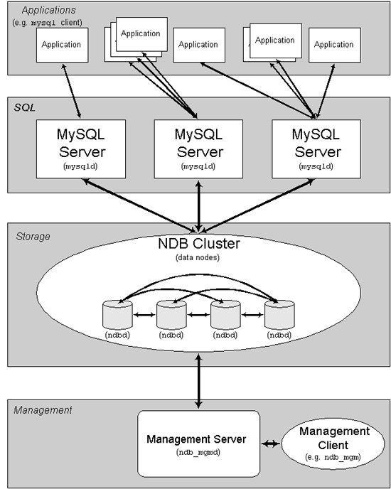

目录
MySQL簇是MySQL适合于分布式计算环境的高实用、高冗余版本。它采用了NDB簇存储引擎，允许在1个簇中运行多个MySQL服务器。在MySQL 5.1二进制版本中、以及与最新的Linux版本兼容的RPM中提供了该存储引擎。（注意，要想获得MySQL簇的功能，必须安装mysql-server和mysql-max RPM）。
目前能够运行MySQL簇的操作系统有Linux、Mac OS X和Solaris。（一些用户通报成功地在FreeBSD上运行了MySQL簇，但MySQL AB公司尚未正式支持该特性）。我们正在努力，以便使MySQL簇能运行在MySQL支持的所有操作系统上，包括Windows，而且当支持新的平台时，将更新该页面。
本章介绍了正在进行的工作，其内容将随着MySQL簇的不断演化而变化。关于MySQL簇的更多信息，请访问MySQL AB公司的网站http://www.mysql.com/products/cluster/。
或许你也希望使用MySQL AB提供的两种额外资源：
· MySQL簇邮件列表。
· MySQL用户论坛上的簇主题区。
关于簇的一些常见问题，请参见17.10节，“MySQL簇常见问题解答”。如果你是MySQL簇的新手，请阅读我方开发人员区的文章如何为两个服务器设置MySQL簇，这会有所帮助。
MySQL簇是一种技术，该技术允许在无共享的系统中部署“内存中”数据库的簇。通过无共享体系结构，系统能够使用廉价的硬件，而且对软硬件无特殊要求。此外，由于每个组件有自己的内存和磁盘，不存在单点故障。
MySQL簇将标准的MySQL服务器与名为NDB的“内存中”簇式存储引擎集成了起来。在我们的文档中，术语NDB指的是与存储引擎相关的设置部分，而术语“MySQL簇”指的是MySQL和NDB存储引擎的组合。
MySQL簇由一组计算机构成，每台计算机上均运行着多种进程，包括MySQL服务器，NDB簇的数据节点，管理服务器，以及（可能）专门的数据访问程序。关于簇中这些组件的关系，请参见下图：

所有这些程序一起构成了MySQL簇。将数据保存到NDB簇存储引擎中时，表将保存在数据节点内。能够从簇中所有其他MySQL服务器直接访问这些表。因此，在将数据保存在簇内的工资表应用程序中，如果某一应用程序更新了1位雇员的工资，所有查询该数据的其他MySQL服务器能立刻发现这种变化。
对于MySQL簇，保存在数据节点内的数据可被映射，簇能够处理单独数据节点的故障，除了少数事务将因事务状态丢失而被放弃外，不会产生其他影响。由于事务性应用程序能够处理事务失败事宜，因而它不是问题源。
通过将MySQL簇引入开放源码世界，MySQL为所有需要它的人员提供了具有高可用性、高性能和可缩放性的簇数据管理。
NDB是一种“内存中”存储引擎，它具有可用性高和数据一致性好的特点。
能够使用多种故障切换和负载平衡选项配置NDB存储引擎，但以簇层面上的存储引擎开始最简单。MySQL簇的NDB存储引擎包含完整的数据集，仅取决于簇本身内的其他数据。
下面，我们介绍了设置由NDB存储引擎和一些MySQL服务器构成的MySQL簇的设置方法。
目前，MySQL簇的簇部分可独立于MySQL服务器进行配置。在MySQL簇中，簇的每个部分被视为1个节点。
注释：在很多情况下，术语“节点”用于指计算机，但在讨论MySQL簇时，它表示的是进程。在单台计算机上可以有任意数目的节点，为此，我们采用术语簇主机。
有三类簇节点，在最低的MySQL簇配置中，至少有三个节点，这三类节点分别是：
· 管理(MGM)节点：这类节点的作用是管理MySQL簇内的其他节点，如提供配置数据、启动并停止节点、运行备份等。由于这类节点负责管理其他节点的配置，应在启动其他节点之前首先启动这类节点。MGM节点是用命令ndb_mgmd启动的。
· 数据节点：这类节点用于保存簇的数据。数据节点的数目与副本的数目相关，是片段的倍数。例如，对于两个副本，每个副本有两个片段，那么就有4个数据节点。没有必要有一个以上的副本。数据节点是用命令ndbd启动的。
· SQL节点：这是用来访问簇数据的节点。对于MySQL簇，客户端节点是使用NDB簇存储引擎的传统MySQL服务器。典型情况下，SQL节点是使用命令mysqld –ndbcluster启动的，或将ndbcluster添加到my.cnf后使用mysqld启动。
簇配置包括对簇中单独节点的配置，以及设置节点之间的单独通信链路。对于目前设计的MySQL簇，其意图在于，从处理器的能力、内存空间和带宽来讲，存储节点是同质的，此外，为了提供单一的配置点，作为整体，簇的所有配置数据均位于1个配置文件中。
管理服务器(MGM节点)负责管理簇配置文件和簇日志。簇中的每个节点从管理服务器检索配置数据，并请求确定管理服务器所在位置的方式。当数据节点内出现有趣的事件时，节点将关于这类事件的信息传输到管理服务器，然后，将这类信息写入簇日志。
此外，可以有任意数目的簇客户端进程或应用程序。它们分为两种类型：
· 标准MySQL客户端：对于MySQL簇，它们与标准的（非簇类）MySQL没有区别。换句话讲，能够从用PHP、Perl、C、C++、Java、Python、Ruby等编写的现有MySQL应用程序访问MySQL簇。
· 管理客户端：这类客户端与管理服务器相连，并提供了优雅地启动和停止节点、启动和停止消息跟踪（仅对调试版本）、显示节点版本和状态、启动和停止备份等的命令。
本节介绍了如何规划、安装、配置和运行MySQL簇的基本知识。与17.4节，“MySQL簇的配置”中给出的示例不同，按照下面介绍的步骤和指南，所得的结果应是有用的MySQL簇，它满足对数据可用性和安全防护的最低要求。
在本节中，我们介绍了下述内容：硬件和软件要求，联网事宜，MySQL簇的安装，配置事宜，簇的启动、停止和重启，加载样本数据库，以及执行查询的方法。
基本假定
本节作了如下假定：
1. 我们将建立具有4个节点的簇，每个节点位于不同的主机上，而且在典型的以太网中具有固定的网络地址，如下所述：
|
节点 |
IP地址 |
|
管理(MGM)节点 |
192.168.0.10 |
|
MySQL服务器(SQL)节点 |
192.168.0.20 |
|
数据(NDBD)节点"A" |
192.168.0.30 |
|
数据(NDBD)节点"B" |
192.168.0.40 |
2. 通过下图可更清楚的表明这点：

4. 注释：出于简单性（以及可靠性）方面的考虑，在本基本知识介绍中我们仅使用数值IP地址。但是，如果在你的网络中具备DNS解析功能，在配置簇的过程中，可使用主机名代替IP地址。作为可选方式，也能使用/etc/hosts文件，或能提供主机查询的操作系统的等效物（如果可用的话）。
5. 在我们的场景中，每台主机均是基于Intel的桌面PC，PC上运行的是常见的一般性Linux版本，操作系统以标准配置安装在磁盘上，未运行任何不必要的服务。具备标准TCP/IP联网客户端的核心操作系统应足以符合我们的要求。此外，为了简单性，我们还假定所有主机上的文件系统是等同的。如果这些主机上的文件系统不同，就需对这些说明作相应的调整。
6. 在每台机器上安装了标准的100 Mbps或1吉比特以太网卡，为每块网卡安装了恰当的驱动程序，并用标准的以太网联网装置（如交换器等）将4台主机连接起来（所有机器应使用具有相同容量的网卡，也就是说，簇中的所有4台机器应全部使用100M网卡，或全部使用1G网卡）。MySQL簇将工作在100 Mbps网络中，但吉比特以太网能提供更好的性能。
注意，MySQL簇不适合于连通性低于100 Mbps的网络。出于该原因（尤其是），在公共网络如Internet上运行MySQL簇很难成功，也不推荐这样做。
7. 对于样本数据，我们将使用世界数据库，该数据库可从MySQL AB公司的网站上下载。由于该数据库占用的空间相对较小，我们假定每台机器有256 MB RAM，这足以运行操作系统、主机NDB进程、以及存储数据库（对于数据节点）。
尽管在本基本介绍中采用的是Linux操作系统，但对这里给出的说明和步骤来说，仅过简单的修改，也能适用于Solaris或Mac OS X。此外，我们还假定你已掌握了安装和配置具备联网功能的操作系统的基本知识，或能够在需要的时候获得帮助。
下一节，我们更详细地讨论了MySQL簇的硬件、软件和联网要求。（请参见17.3.1节，“硬件、软件和联网”）。
MySQL簇的一个强大优点在于，它能运行在普通硬件上，除了需要较大的RAM外在这点上没有特殊要求，这是因为实际的数据存储均是在内存中进行的。（注意，未来这点会改变，我们打算在未来的MySQL簇版本中实现基于磁盘的存储）。显然，多个CPU和更快的CPU能增强性能。对于簇进程来说，对内存的要求相对较少。
簇的软件要求程度适中。主机操作系统不需要任何特殊模块、服务、应用程序、或配置就能支持MySQL簇。对于Mac OS X或Solaris，标准安装就已足够。对于Linux，标准的“即开即用”安装应是所需的全部。MySQL软件要求很简单：MySQL-max 5.1的生产版就是所需的全部，要想获得簇支持，必须使用MySQL的-max版本。无需自己编译MySQL就能使用簇。在本节中，我们假定你使用了与Linux相适应的-max二进制版本。对于Solaris或Mac OS X操作系统，相应的部分可通过MySQL软件下载页面获得，http://dev.mysql.com/downloads/。
对于节点之间的通信，簇支持采用标准拓扑方案的TCP/IP联网，对于每台主机的预期最低要求是1块标准的100 Mbps以太网卡，对于作为整体的簇，还需加上交换器、网络集线器或路由器以提供网络连通性。我们强烈建议，应在其自己的子网内运行MySQL簇，不与非簇机器共享该子网，原因如下：
· 安全性：簇节点之间的通信未采用任何特殊加密或防护。对MySQL簇内传输的唯一保护方法是，在受保护的网络上运行簇。如果打算将MySQL簇用于Web应用，簇应明确地位于防火墙后面，而且不应位于网络的非军事区（DMZ）或其他地方。
· 效率：在专有的或受保护的网络上设置MySQL簇，这样，簇就能独享簇主机之间的带宽。为MySQL簇使用单独的交换器不仅能防止对簇数据的非法访问，而且还能确保簇节点不受网络上其他计算机之间信息传输的干扰。为了增强可靠性，可以使用双交换器和双卡，以防止网络出现单点故障，对于这类通信链路，很多设备驱动均支持故障切换功能。
也能与MySQL簇一起使用高速SCI（规模可扩展的计算机接口），但这不是要求的。关于该协议的更多信息，以及它与MySQL簇的用法，请参见17.7节，“使用与MySQL簇的高速互连”对于每台运行存储或SQL节点的MySQL簇主机计算机，必须在其上安装MySQL-max二进制版本。对于管理节点，没有必要安装MySQL服务器二进制版本，但应安装MGM服务器端口监督程序和客户端二进制版本（分别是ndb_mgmd和ndb_mgm）。在本节中，我们介绍了为每种簇节点安装正确的二进制版本所需的步骤。
MySQL AB提供了预编译的二进制文件，它们支持簇，你不需要自己编译这些文件（如果你确实需要定制的二进制文件，请参见2.8.3节，“从开发源码树安装”）。因此，对于每台簇主机，安装进程的第一步是从MySQL下载区下载文件mysql-max-5.1.2-alpha-pc-linux-gnu-i686.tar.gz。我们假定你将该文件放在各机器的/var/tmp目录下。
对于32位和64位Linux平台，均有相应的RPM，RPM安装的-max二进制文件支持NDB簇存储引擎。如果你选择使用它们而不是二进制文件，务必在运行簇节点的所有机器上安装-server和-max软件包（关于使用RPM安装MySQL的更多信息，请参见2.4节，“在Linux下安装MySQL”）。使用RPM完成安装后，仍需对簇进行配置，请参见17.3.3节，“配置”。
注释：完成安装后，不启动任何二进制文件。配置完所有节点后，我们将向你介绍执行这类操作的方法。
存储节点和SQL节点安装
在设计为运行存储节点或SQL节点的三台机器的每一台上，以系统根用户身份执行下述步骤：
1. 检查你的/etc/passwd和/etc/group文件（或使用操作系统提供的用于管理用户和组的工具），查看在系统上是否已存在mysql组和mysql用户，这是因为某些操作系统会将其作为安装进程的一部分予以创建。如果它们不存在，创建新的mysql用户组，然后为该组添加1个mysql用户。
2. groupadd mysql
3. useradd -g mysql mysql
4. 进入包含下载文件的目录，解包档案文件，并创建与mysql-max可执行文件的symlink。注意，根据MySQL的版本号，实际的文件名和目录名会有所不同。
5. cd /var/tmp
6. tar -xzvf -C /usr/local/bin mysql-max-5.1.2-alpha-pc-linux-gnu-i686.tar.gz
7. ln -s /usr/local/bin/mysql-max-5.1.2-alpha-pc-linux-gnu-i686 mysql
8. 进入mysql目录，运行所提供的用于创建系统数据库的脚本：
9. cd mysql
10. scripts/mysql_install_db --user=mysql
11.为MySQL服务器和数据目录设置必要的权限：
12. chown -R root .
13. chown -R mysql data
14. chgrp -R mysql .
注意，在每台运行数据节点的机器上，数据目录是/usr/local/mysql/data。配置管理节点时将用到这类信息（请参见17.3.3节，“配置”）。
15.将MySQL启动脚本拷贝到恰当的目录下，使之成为可执行的脚本，并设置它以便在启动操作系统时启动：
16. cp support-files/mysql.server /etc/rc.d/init.d/
17. chmod +x /etc/rc.d/init.d/mysql.server
18. chkconfig --add mysql.server
在此，我们使用Red Hat的chkconfig来创建与启动脚本的链接，请在你的操作系统上使用恰当的用于该目的的方式，如Debian上的update-rc.d。
请记住，对于存储节点或SQL节点所在的每台机器，必须分别指向上述步骤。
管理节点安装
对于MGM（管理）节点，不需要安装mysqld可执行文件，仅需安装用于MGM服务器和客户端的二进制文件，这类文件可在下载的-max档案中找到。再次假定你将该文件放在了/var/tmp目录下，引导系统时（也就是说使用sudo, su root或系统的等效命令后，假定具有系统管理员账户的权限），执行下述步骤，在簇管理节点主机上安装ndb_mgmd和ndb_mgm：
1. 即如/var/tmp目录，从档案文件中将ndb_mgm和ndb_mgmd提取到恰当的目录下，如/usr/local/bin：
2. cd /var/tmp
3. tar -zxvf mysql-max-5.1.2-alpha-pc-linux-gnu-i686.tar.gz /usr/local/bin '*/bin/ndb_mgm*'
4. 进入解包文件所在的目录，然后使这两个文件成为可执行的：
5. cd /usr/local/bin
6. chmod +x ndb_mgm*
在17.3.3节，“配置”中，我们将为示例簇中的所有节点创建和编写配置文件。
对于我们的4节点、4主机MySQL簇，需要编写4个配置文件，每个节点/主机1个。
· 每个数据节点或SQl节点需要1个my.cnf文件，该文件提供了两类信息：connectstring（连接字符串），用于通知节点到哪里找到MGM节点；以及一行，用于通知该主机（容纳数据节点的机器）上的MySQL服务器运行在NDB模式下。
关于连接字符串的更多信息，请参见17.4.4.2节，“MySQL簇连接字符串”。
· 管理节点需要config.ini文件，该文件通知节点有多少需要维护的副本，需要在每个数据节点上为数据和索引分配多少内存，数据节点的位置，在每个数据节点上保存数据的磁盘位置，以及SQL节点的位置。
配置存储节点和SQL节点
数据节点所需的my.cnf文件相当简单。配置文件应位于/etc目录下，并能用任何文本编辑器进行编辑（如有必要，创建该文件），例如：
vi /etc/my.cnf
对于本示例中的每个数据节点和SQL节点，my.cnf文件类似于：
# Options for mysqld process:
[MYSQLD]
ndbcluster # run NDB engine
ndb-connectstring=192.168.0.10 # location of MGM node
# Options for ndbd process:
[MYSQL_CLUSTER]
ndb-connectstring=192.168.0.10 # location of MGM node
输入上述内容后，保存文件并退出文本编辑器。在容纳数据节点“A”、数据节点“B”和SQL节点的机器上分别执行上述操作。
配置管理节点
配置MGM节点的第一步是创建目录，该目录用于存放配置文件，然后创建配置文件本身。例如（以根用户身份运行）：
mkdir /var/lib/mysql-cluster
cd /var/lib/mysql-cluster
vi config.ini
在此使用了vi来创建文件，不过，任何文本编辑器均应能胜任。
对于我们的典型设置，config.ini文件应类似于：
# Options affecting ndbd processes on all data nodes:
[NDBD DEFAULT]
NoOfReplicas=2 # Number of replicas
DataMemory=80M # How much memory to allocate for data storage
IndexMemory=18M # How much memory to allocate for index storage
# For DataMemory and IndexMemory, we have used the
# default values. Since the "world" database takes up
# only about 500KB, this should be more than enough for
# this example Cluster setup.
# TCP/IP options:
[TCP DEFAULT]
portnumber=2202 # This the default; however, you can use any
# port that is free for all the hosts in cluster
# Note: It is recommended beginning with MySQL 5.0 that
# you do not specify the portnumber at all and simply allow
# the default value to be used instead
# Management process options:
[NDB_MGMD]
hostname=192.168.0.10 # Hostname or IP address of MGM node
datadir=/var/lib/mysql-cluster # Directory for MGM node logfiles
# Options for data node "A":
[NDBD]
# (one [NDBD] section per data node)
hostname=192.168.0.30 # Hostname or IP address
datadir=/usr/local/mysql/data # Directory for this data node's datafiles
# Options for data node "B":
[NDBD]
hostname=192.168.0.40 # Hostname or IP address
datadir=/usr/local/mysql/data # Directory for this data node's datafiles
# SQL node options:
[MYSQLD]
hostname=192.168.0.20 # Hostname or IP address
# (additional mysqld connections can be
# specified for this node for various
# purposes such as running ndb_restore)
（注释："world"数据库可从站点http://dev.mysql.com/doc/下载，它列在“示例”栏目下）。
一旦创建了所有的配置文件并指定了这些最低选项，可启动簇，并验证所有进程均能正常运行。关于这方面的讨论，请参见17.3.4节，“首次启动”。
关于可用MySQL簇配置参数以及其用法的更多信息，请参见17.4.4节，“配置文件”和17.4节，“MySQL簇的配置”。关于与进行备份有关的MySQL簇配置，请参见17.6.5.4节，“簇备份的配置”。
注释：簇管理节点的默认端口是1186，数据节点的默认端口2202。从MySQL 5.0.3开始，该限制已被放宽，簇能够根据空闲的端口自动地为数据节点分配端口。
完成配置后，启动簇并不很困难。必须在数据节点所在的主机上分别启动每个簇节点进程。尽管能够按任何顺序启动节点，但我们建议，应首先启动管理节点，然后启动存储节点，最后启动SQL节点：
1. 在管理主机上，从系统shell发出下述命令以启动MGM节点进程：
2. shell> ndb_mgmd -f /var/lib/mysql-cluster/config.ini
注意，必须用“-f”或“--config-file”选项，告诉ndb_mgmd到哪里找到配置文件（详情请参见17.5.3节，“ndb_mgmd，“管理服务器”进程”）。
3. 在每台数据节点主机上，对于首次启动，运行下述命令启动NDBD进程：
4. shell> ndbd --initial
注意，仅应在首次启动ndbd时，或在备份／恢复或配置变化后重启ndbd时使用“--initial”参数，这很重要。原因在于，该参数会使节点删除由早期ndbd实例创建的、用于恢复的任何文件，包括恢复用日志文件。
5. 如果使用RPM在SQL节点所在的簇主机上安装了MySQL，能够（也应当）使用安装在/etc/init.d下的启动脚本在SQL节点上启动MySQL服务器进程。注意，要想运行“-max”服务器二进制文件，除了标准的RPM外，还需要安装-max服务器RPM。
如果一切顺利，并已正确设置了簇，那么簇现在应能运行。通过调用ndb_mgm管理节点客户端，可对其进行测试。其输出应类似于：
shell> ndb_mgm
-- NDB Cluster -- Management Client --
ndb_mgm> SHOW
Connected to Management Server at: localhost:1186
Cluster Configuration
---------------------
[ndbd(NDB)] 2 node(s)
id=2 @192.168.0.30 (Version: 5.1.2-alpha, Nodegroup: 0, Master)
id=3 @192.168.0.40 (Version: 5.1.2-alpha, Nodegroup: 0)
[ndb_mgmd(MGM)] 1 node(s)
id=1 @192.168.0.10 (Version: 5.1.2-alpha)
[mysqld(SQL)] 1 node(s)
id=4 (Version: 5.1.2-alpha)
具体的输出内容可能会略有不同，这取决于你所使用的MySQL版本。
注释：如果你正在使用较早的MySQL版本，你或许会看到引用为‘[mysqld(API)]’的SQL节点。这是一种早期的用法，现已放弃。
现在，应能在MySQL簇中处理数据库，表和数据。关于这方面的简要讨论，请参见17.3.5节，“加载示例数据并执行查询”。
与没有使用簇的MySQL相比，在MySQL簇内操作数据的方式没有太大的区别。执行这类操作时应记住两点：
· 表必须用ENGINE=NDB或ENGINE=NDBCLUSTER选项创建，或用ALTER TABLE选项更改，以使用NDB簇存储引擎在簇内复制它们。如果使用mysqldump的输出从已有数据库导入表，可在文本编辑器中打开SQL脚本，并将该选项添加到任何表创建语句，或用这类选项之一替换任何已有的ENGINE（或TYPE）选项。例如，假定在另一个MySQL服务器（不支持MySQL簇）上有样本世界数据库，而且你打算导出城市表的定义：
· shell> mysqldump --add-drop-table world City > city_table.sql
在所得的city_table.sql文件中，将包含这条表创建语句（以及导入表数据所需的INSERT语句）：
DROP TABLE IF EXISTS City;
CREATE TABLE City (
ID int(11) NOT NULL auto_increment,
Name char(35) NOT NULL default '',
CountryCode char(3) NOT NULL default '',
District char(20) NOT NULL default '',
Population int(11) NOT NULL default '0',
PRIMARY KEY (ID)
) ENGINE=MyISAM;
INSERT INTO City VALUES (1,'Kabul','AFG','Kabol',1780000);
INSERT INTO City VALUES (2,'Qandahar','AFG','Qandahar',237500);
INSERT INTO City VALUES (3,'Herat','AFG','Herat',186800);
# (remaining INSERT statements omitted)
需要确认MySQL为该表使用了NDB存储引擎。有两种完成该任务的方法。其中一种方法是，在将表导入簇数据库之前更改其定义，使其类似于（仍使用“城市”作为示例）：
DROP TABLE IF EXISTS City;
CREATE TABLE City (
ID int(11) NOT NULL auto_increment,
Name char(35) NOT NULL default '',
CountryCode char(3) NOT NULL default '',
District char(20) NOT NULL default '',
Population int(11) NOT NULL default '0',
PRIMARY KEY (ID)
) ENGINE=NDBCLUSTER;
INSERT INTO City VALUES (1,'Kabul','AFG','Kabol',1780000);
INSERT INTO City VALUES (2,'Qandahar','AFG','Qandahar',237500);
INSERT INTO City VALUES (3,'Herat','AFG','Herat',186800);
# (etc.)
对于将成为簇数据库组成部份的每个表，均需要为其定义执行上述操作。完成该任务的最简单方法是，简单地在world.sql文件上执行“查找-替换”，并用ENGINE=NDBCLUSTER替换所有的TYPE=MyISAM实例。如果你不打算更改该文件，也可使用ALTER TABLE。详情请参见下面的介绍。
假定你已在簇的SQL节点上创建了名为“world”的数据库，随后可使用mysql命令行客户端读取city_table.sql，并按通常方式创建和填充对应的表：
shell> mysql world < city_table.sql
请记住，上述命令必须在运行SQL节点的主机上执行，这点十分重要。对于本例，应在IP地址为192.168.0.20的机器上执行。
要想在SQL节点上创建世界数据库的副本，请将文件保存到/usr/local/mysql/data，然后运行：
shell> cd /usr/local/mysql/data
shell> mysql world < world.sql
当然，SQL脚本必须能被mysql系统用户读取。如果将文件保存到了不同的目录下，请作相应的调整。
注意，在MySQL 5.1中，NDB簇不支持自动发现数据库的功能，这点很重要（请参见17.8节，“MySQL簇的已知限制”）。这意味着，一旦在一个数据节点上创建了世界（world）数据库和它的表，在簇中的每个SQL节点上还需要发出命令CREATE DATABASE world（从MySQL 5.0.2开始，可以使用CREATE SCHEMA world取而代之），后跟FLUSH TABLES。这样，节点就能识别数据库并读取其表定义。
在SQL节点上运行SELECT查询与在MySQL服务器的任何其他实例上运行查询没有区别。要想从命令行运行查询，首先应按照通常方式登录到MySQL监视器：
shell> mysql -u root -p
Enter password:
Welcome to the MySQL monitor. Commands end with ; or \g.
Your MySQL connection id is 1 to server version: 5.1.2-alpha
键入’help;’或’\h’获取帮助。键入’\c’清空缓冲区。
mysql>
如果在导入MySQL脚本之前未更改表定义中的ENGINE=子句，应在此时运行下述命令：
mysql> USE world;
mysql> ALTER TABLE City ENGINE=NDBCLUSTER;
mysql> ALTER TABLE Country ENGINE=NDBCLUSTER;
mysql> ALTER TABLE CountryLanguage ENGINE=NDBCLUSTER;
注意，在这里我们简单地使用了MySQL服务器密码为空的默认根用户账户。当然，在生产设置下，安装MySQL服务器时，总应遵守标准的安全方法措施，包括设置牢靠的根用户密码，并为用户创建具有完成任务所需的权限的用户账户。关于这方面的更多信息，请参见5.7节，“MySQL访问权限系统”。
需要关注的是，当簇节点彼此访问时不使用MySQL的权限系统，设置或更改MySQL用户账户（包括根用户账户）不影响节点之间的交互，它们仅对访问SQL节点的应用程序有效。
能够以通常的方式选择数据库，并对表执行SELECT查询，就像退出MySQL监视器一样：
mysql> USE world;
mysql> SELECT Name, Population FROM City ORDER BY Population DESC LIMIT 5;
+-----------+------------+
| 名称 | 人口 |
+-----------+------------+
| 孟买 | 10500000 |
| 汉城 | 9981619 |
| 圣保罗 | 9968485 |
| 上海 | 9696300 |
| 雅加达 | 9604900 |
+-----------+------------+
5 rows in set (0.34 sec)
mysql> \q
Bye
shell>
使用MySQL的应用程序能够使用标准的API。重要的是应记住，你的应用程序必须访问SQL节点，而不是MGM或存储节点。在下面的简单示例中，介绍了使用PHP 5的mysqli扩展（运行在位于网络中其他位置的Web服务器上）执行相同查询的方法：
<!DOCTYPE HTML PUBLIC "-//W3C//DTD HTML 4.01 Transitional//EN"
"http://www.w3.org/TR/html4/loose.dtd">
<html>
<head>
<meta http-equiv="Content-Type"
content="text/html; charset=iso-8859-1">
<title>SIMPLE mysqli SELECT</title>
</head>
<body>
<?php
# connect to SQL node:
$link = new mysqli('192.168.0.20', 'root', '', 'world');
# parameters for mysqli constructor are:
# host, user, password, database
if( mysqli_connect_errno() )
die("Connect failed: " . mysqli_connect_error());
$query = "SELECT Name, Population
FROM City
ORDER BY Population DESC
LIMIT 5";
# if no errors...
if( $result = $link->query($query) )
{
?>
<table border="1" width="40%" cellpadding="4" cellspacing ="1">
<tbody>
<tr>
<th width="10%">City</th>
<th>Population</th>
</tr>
<?
# then display the results...
while($row = $result->fetch_object())
printf(<tr>\n <td align=\"center\">%s</td><td>%d</td>\n</tr>\n",
$row->Name, $row->Population);
?>
</tbody
</table>
<?
# ...and verify the number of rows that were retrieved
printf("<p>Affected rows: %d</p>\n", $link->affected_rows);
}
else
# otherwise, tell us what went wrong
echo mysqli_error();
# free the result set and the mysqli connection object
$result->close();
$link->close();
?>
</body>
</html>
我们假定运行在Web服务器上的进程能够访问SQL节点的IP地址。
采用类似的风格，可以使用MySQL C API、Perl-DBI、Python-mysql、或MySQL AB自己的连接器来执行数据定义和操控任务，就像正常使用MySQL那样。
· 另外还请记住，每个NDB表必须有一个主键。如果在创建表时用户未定义主键，NDB簇存储引擎将自动生成隐含的主键。（注释：该隐含 键也将占用空间，就像任何其他的表索引一样。由于没有足够的内存来容纳这些自动创建的键，出现问题并不罕见）。
要想关闭簇，可在MGM节点所在的机器上，在Shell中简单地输入下述命令：
shell> ndb_mgm -e shutdown
该命令将恰当地中止ndb_mgm、ndb_mgmd以及任何ndbd进程。使用mysqladmin shutdown或其他方法，可中止SQL节点。注意，这里的“-e”选项用于将命令从shell传递到ndb_mgm客户端。请参见4.3.1节，“在命令行上使用选项”。
要想重启簇，可简单地运行下述命令：
· 在管理主机上（本设置中为192.168.0.10）：
· shell> ndb_mgmd -f /var/lib/mysql-cluster/config.ini
· 在每台数据节点主机上（192.168.0.30和192.168.0.40）：
· shell> ndbd
请记住，正常重启NDBD节点时，不要用“--initial”选项调用该命令。
· 在SQL主机上（192.168.0.20）：
· shell> mysqld &
关于创建簇备份的更多信息，请参见17.6.5.2节，“使用管理服务器创建备份”。
要想从备份中恢复簇，需要使用ndb_restore命令。请参见17.6.5.3节，“如何恢复簇备份”。
关于配置MySQL簇的更多信息，请参见17.4节，“MySQL簇的配置”。
为了避免不必要的资源分配，默认情况下，在服务器的配置中将禁止NDB存储引擎。要想启用NDB，需要更改服务器的my.cnf配置文件，或使用“—ndbcluster”选项启动服务器。
由于MySQL服务器是簇的一部分，它也需要知道如何访问MGM节点，以便获得簇配置数据。默认行为是查找本地主机上MGM节点。但是，如果需要另外指定它的位置，可在my.cnf文件或MySQL服务器命令行上进行。能够使用NDB存储引擎之前，至少应有一个MGM节点是可操作的，而且还应有所需的数据节点。
17.4.1. 从源码创建MySQL簇
对于Linux、Mac OS X和Solaris，在其二进制分发版中均提供了NDB簇存储引擎。在Windows平台上尚不支持它，但我们打算在不远的将来使其能用于win32和其他平台。
如果选择从源码tarball或MySQL 5.1 BitKeeper树创建它，运行configure时，务必使用“--with-ndbcluster”选项。也可以使用BUILD/compile-pentium-max创建脚本。注意，该脚本包含OpenSSL，因此，要想成功创建，必须有或获得OpenSSL，如不然，需要更改“compile-pentium-max”以便将该要求排除在外，当然，也能采用标准步骤来编译你自己的二进制文件，然后执行常规测试和安装步骤。请参见2.8.3节，“从开发源码树安装”。
在下面的数节内，假定你已熟悉了MySQL的安装方法，在此，我们仅介绍了MySQL簇配置与不具备簇功能的MySQL配置之间的差别。如果希望了解关于后者的更多信息，请参见第2章：安装MySQL。
如果首先运行了所有的管理和数据节点，你将发现簇配置最简单，这或许是最花时间的配置部分。编辑my.cnf文件相对直接，在本节中，仅讨论与不具备簇功能的MySQL配置不同的部分。
首先，应以系统根用户身份通过执行下述命令创建配置目录，如/var/lib/mysql-cluster：
shell> mkdir /var/lib/mysql-cluster
在该目录下，使用下述信息创建名为config.ini的文件，针对系统的情况，用恰当的值替换HostName和DataDir。
# file "config.ini" - showing minimal setup consisting of 1 data node,
# 1 management server, and 3 MySQL servers.
# The empty default sections are not required, and are shown only for
# the sake of completeness.
# Data nodes must provide a hostname but MySQL Servers are not required
# to do so.
# If you don't know the hostname for your machine, use localhost.
# The DataDir parameter also has a default value, but it is recommended to
# set it explicitly.
# Note: DB, API, and MGM are aliases for NDBD, MYSQLD, and NDB_MGMD
# respectively. DB and API are deprecated and should not be used in new
# installations.
[NDBD DEFAULT]
NoOfReplicas= 1
[MYSQLD DEFAULT]
[NDB_MGMD DEFAULT]
[TCP DEFAULT]
[NDB_MGMD]
HostName= myhost.example.com
[NDBD]
HostName= myhost.example.com
DataDir= /var/lib/mysql-cluster
[MYSQLD]
[MYSQLD]
[MYSQLD]
现在，能够按下述方式启动管理服务器：
shell> cd /var/lib/mysql-cluster
shell> ndb_mgmd
接下来，通过运行ndbd启动单个DB节点。首次为给定的DB节点启动ndbd时，应使用“—initial”选项，如下所示：
shell> ndbd --initial
对于后续的ndbd启动，通常不需要使用该选项：
shell> ndbd
这是因为，--initial选项将删除该数据节点的所有已有数据和日志文件（以及所有的表元数据），并创建新的数据和日志文件。该规则的一项例外是：添加了新数据节点后重启簇并从备份进行恢复之时。
默认情况下，ndbd将在端口1186上查找本地主机上的管理服务器。
注释：如果从二进制tarball安装了MySQL，需要明确指定ndb_mgmd和ndbd服务器的路径。（正常情况下，它们位于/usr/local/mysql/bin目录下）。
最后，进入MySQL数据目录（通常是/var/lib/mysql或/usr/local/mysql/data），并确保my.cnf文件包含启用NDB存储引擎所需的选项：
[mysqld]
ndbcluster
现在，你能按通常方式启动MySQL服务器：
shell> mysqld_safe --user=mysql &
等待一段时间，确认MySQL服务器正在恰当运行。如果发现通知用mysql停止，请检查服务器的.err文件，找出错误。
如果到目前为止一切正常，可使用簇启动它：
shell> mysql
Welcome to the MySQL monitor. Commands end with ; or \g.
Your MySQL connection id is 1 to server version: 5.1.2-alpha-Max
键入’help;’或’\h’获取帮助。键入’\c’清空缓冲区。
mysql> SHOW ENGINES\G
...
*************************** 12. row ***************************
Engine: NDBCLUSTER
Support: YES
Comment: Clustered, fault-tolerant, memory-based tables
*************************** 13. row ***************************
Engine: NDB
Support: YES
Comment: Alias for NDBCLUSTER
...
（注意，上例输出中显示的行号可能与你的系统上显示的不同，具体情况取决于使用的MySQL版本，以及配置它的方式）。
shell> mysql
Welcome to the MySQL monitor. Commands end with ; or \g.
Your MySQL connection id is 1 to server version: 5.1.2-alpha-Max
键入’help;’或’\h’获取帮助。键入’\c’清空缓冲区。
mysql> USE test;
Database changed
mysql> CREATE TABLE ctest (i INT) ENGINE=NDBCLUSTER;
Query OK, 0 rows affected (0.09 sec)
mysql> SHOW CREATE TABLE ctest \G
*************************** 1. row ***************************
Table: ctest
Create Table: CREATE TABLE `ctest` (
`i` int(11) default NULL
) ENGINE=ndbcluster DEFAULT CHARSET=latin1
1 row in set (0.00 sec)
要想检查是否恰当设置了节点，可启动管理客户端：
shell> ndb_mgm
随后，为了获得关于簇状态的报告，可从管理客户端内使用SHOW命令：
NDB> SHOW
Cluster Configuration
---------------------
[ndbd(NDB)] 1 node(s)
id=2 @127.0.0.1 (Version: 3.5.3, Nodegroup: 0, Master)
[ndb_mgmd(MGM)] 1 node(s)
id=1 @127.0.0.1 (Version: 3.5.3)
[mysqld(API)] 3 node(s)
id=3 @127.0.0.1 (Version: 3.5.3)
id=4 (not connected, accepting connect from any host)
id=5 (not connected, accepting connect from any host)
此时，你成功地设置了工作的MySQL簇。现在，你能使用由ENGINE=NDBCLUSTER或其别名ENGINE=NDB创建的表，将数据保存到簇中。
17.4.4. 配置文件
配置MySQL簇需要与两个文件打交道：
· my.cnf：为所有的MySQL簇可执行文件指定了选项。你应熟悉了前面介绍的使用MySQL的方式，通过运行在簇中的每个可执行文件，必须能够访问该文件。
· config.ini：该文件仅由MySQL簇管理服务器读取，随后管理服务器会将包含该文件的信息分配给簇中的所有进程。config.ini文件包含对簇中各节点的描述。包括数据节点的配置参数，以及簇中所有节点间连接的配置参数。
我们正在不断改进簇配置，并努力简化该进程。尽管我们将尽量维护向后兼容性，但在某些时候，可能也需要引入不兼容的变动。在这种情况下，我们将尽量让簇用户事先了解该变动是否是向后兼容的。如果你发现了尚未记录在文档中的这类变动，请使用我们的缺陷数据库通报它。
为了支持MySQL簇，需要更新文件my.cnf，如下例所示。注意，不应将这里给出的选项与config.ini文件中出现的选项混淆起来。此外，从命令行调用可执行文件时，或许也应指定这些参数。
# my.cnf
# example additions to my.cnf for MySQL Cluster
# (valid in MySQL 5.1)
# enable ndbcluster storage engine, and provide connectstring for
# management server host (default port is 1186)
[mysqld]
ndbcluster
ndb-connectstring=ndb_mgmd.mysql.com
# provide connectstring for management server host (default port: 1186)
[ndbd]
connect-string=ndb_mgmd.mysql.com
# provide connectstring for management server host (default port: 1186)
[ndb_mgm]
connect-string=ndb_mgmd.mysql.com
# provide location of cluster configuration file
[ndb_mgmd]
config-file=/etc/config.ini
（关于连接字符的更多信息，请参见17.4.4.2节，“MySQL簇连接字符串”）。
# my.cnf
# example additions to my.cnf for MySQL Cluster
# (will work on all versions)
# enable ndbcluster storage engine, and provide connectstring for management
# server host to the default port 1186
[mysqld]
ndbcluster
ndb-connectstring=ndb_mgmd.mysql.com:1186
或许，你也可以使用簇my.cnf中单独的[mysql_cluster]部分，设置可被所有可执行文件读取的设置，并影响所有的可执行文件：
# cluster-specific settings
[mysql_cluster]
ndb-connectstring=ndb_mgmd.mysql.com:1186
目前，配置文件采用的是INI格式，默认情况下被命名为config.ini。该文件在启动时由ndb_mgmd读取，并能被置于任何地方。在命令行上与ndb_mgmd一起使用--config-file=[<path>]<filename>，可指定其位置和名称。如果未指定配置文件，默认情况下，ndb_mgmd将尝试读取位于当前工作目录下的文件config.ini。
对于大多数参数，均定义了默认值，也能在config.ini文件中指定默认值。要想创建默认值部分，可简单地将单词DEFAULT添加到该部分的名称上。例如，数据节点是使用[NDBD]部分配置的。如果所有的数据节点使用相同大小的数据内存，而且该内存大小不同于默认的大小，应创建包含DataMemory行的[NDBD DEFAULT]部分，为所有数据节点指定默认的数据内存大小。
INI格式包含多个部分，每一部分以该部分的标题（用方括号括住）开始，后跟恰当的参数名和值。与标准格式的不同之处在于，不能用冒号“:”和等号“=”隔开参数名和值；另一处不同是，这些部分并不是用名称唯一标识的。其唯一性条目（如具有相同类型的两个不同节点）是由唯一ID标识的。
作为最低要求，配置文件必须定义簇中的计算机和节点，以及这些节点所在的计算机。下面给出了一个简单的簇配置文件示例，该簇包含1个管理服务器，2个数据节点和2个MySQL服务器：
# file "config.ini" - 2 data nodes and 2 SQL nodes
# This file is placed in the startup directory of ndb_mgmd (the management
# server)
# The first MySQL Server can be started from any host. The second can be started
# only on the host mysqld_5.mysql.com
[NDBD DEFAULT]
NoOfReplicas= 2
DataDir= /var/lib/mysql-cluster
[NDB_MGMD]
Hostname= ndb_mgmd.mysql.com
DataDir= /var/lib/mysql-cluster
[NDBD]
HostName= ndbd_2.mysql.com
[NDBD]
HostName= ndbd_3.mysql.com
[MYSQLD]
[MYSQLD]
HostName= mysqld_5.mysql.com
在该配置文件中，有6个不同部分：
· [COMPUTER]：定义了簇主机。
· [NDBD]：定义了簇的数据节点。
· [MYSQLD]：定义了簇的MySQL服务器节点。
· [MGM]或[NDB_MGMD]：定义了簇的管理服务器节点。
· [TCP]：定义了簇中节点间的TCP/IP连接，TCP/IP是默认的连接协议。
· [SHM]：定义了节点间的共享内存连接。以前，这类连接仅能在使用“--with-ndb-shm”选项创建的二进制文件中使用。在MySQL 5.1-Max中，默认情况下它是允许的，但仍应将其视为试验性的。
注意，每个节点在config.ini文件中有自己的部分。例如，由于该簇有两个数据节点，在配置文件中，也包含定义这些节点的部分。
可以为每个部分定义DEFAULT值。所有的簇参数名称均区分大小写。
除了MySQL簇管理服务器（ndb_mgmd），构成MySQL簇的每个节点均需要1个连接字符串，该连接字符串指向管理服务器所在的位置。它用于建立与管理服务器的连接，并执行其他任务，这类其他任务取决于节点在簇内扮演的角色。连接字符串的语法如下：
<connectstring> :=
[<nodeid-specification>,]<host-specification>[,<host-specification>]
<nodeid-specification> := node_id
<host-specification> := host[:port]
node_id是大于1的整数，用于确定config.ini中的节点。port是引用正常Unix端口的整数。host是代表有效Internet地址的字符串。
example 1 (long): "nodeid=2,myhost1:1100,myhost2:1100,192.168.0.3:1200"
example 2 (short): "myhost1"
如果未提供，所有节点均将使用localhost:1186作为默认的连接字符串值。如果在连接字符串中省略了<port>，默认端口为1186。该端口在网络上总应是可用的，这是因为它是由IANA为该目的而指定的（详情请参见http://www.iana.org/assignments/port-numbers）。
通过列出多个<host-specification>值，能够指定数个冗余管理服务器。簇节点将按照指定的顺序尝试连接到每台主机上的连续管理服务器，直至成功建立起连接为止。
有多种指定连接字符串的不同方法：
· 每个可执行文件有自己的命令行选项，使用它，能够在启动时指定管理服务器（关于各可执行程序的介绍，请参见相应的文档）。
· 也能一次性地为簇中的所有节点设置连接字符串，方法是将其放在管理服务器的my.cnf文件的[mysql_cluster]部分。
· 为了向后兼容性，还提供了两种其他选项，其使用的语法相同：
1. 设置NDB_CONNECTSTRING环境变量，使之包含connectstring（连接字符串）。
2. 将针对各可执行文件的connectstring（连接字符串）写入名为Ndb.cfg的文本文件，并将该文件放在可执行文件的启动目录下。
但是，这些方法目前已不再受重视，对于新安装，不应使用它们。
指定连接字符串时，推荐的方法是在命令行上设置它，或为每个可执行文件在my.cnf文件中设置它。
除了用于避免为系统中的每个节点定义主机名外，[COMPUTER]部分没有实际的重要意义。这里所提到的所有参数都是需要的。
· [COMPUTER]Id
这是整数值，用于引用位于配置文件中别处的主机计算机。
· [COMPUTER]HostName
这是计算机的主机名或IP地址。
[NDB_MGMD]部分（或其别名[MGM]）用于配置管理服务器的行为。下面列出的所有参数均能被忽略，如果是这样，将使用其默认值。注释：如果ExecuteOnComputer和HostName参数均未出现，会为它们指定默认值localhost。
· [NDB_MGMD]Id
簇中的每个节点都有唯一的标识，由从1到63的整数表示。所有的内部簇消息使用该ID来定址结点。
· [NDB_MGMD]ExecuteOnComputer
它引用在[COMPUTER]部分中定义的计算机之一。
· [NDB_MGMD]PortNumber
这是管理服务器用于监听配置请求和管理命令的端口号。
· [NDB_MGMD]LogDestination
该参数指定了将簇登录信息发送到哪里。有三种选项，CONSOLE、SYSLOG和FILE：
o CONSOLE，将日志输出到标准输出设备（stdout）：
o CONSOLE
o SYSLOG，将日志发送到syslog（系统日志）软设备，可能的值包括：auth、authpriv、cron、daemon、ftp、kern、lpr、mail、news、syslog、user、uucp、local0、local1、local2、local3、local4、local5、local6或local7。
注释：并非所有的操作系统均支持所有的软设备。
SYSLOG:facility=syslog
o FILE，将簇日志输出导向相同机器上的正规文件。可指定下述值：
§ filename：日志文件的名称。
§ maxsize：日志记录切换到新文件之前，文件能增长到的最大尺寸。出现该情况时，将通过在文件名上添加.x，重命名日志文件，其中，x是该名称尚未使用的下一个数字。
§ maxfiles：日志文件的最大数目。
o FILE:filename=cluster.log,maxsize=1000000,maxfiles=6
使用由分号分隔的字符串，可以指定多个日志目标，如下所示：
CONSOLE;SYSLOG:facility=local0;FILE:filename=/var/log/mgmd
FILE参数的默认值是FILE:filename=ndb_node_id_cluster.log,maxsize=1000000,maxfiles=6，其中，node_id是节点的ID。
· [NDB_MGMD]ArbitrationRank
该参数用于定义哪个节点将扮演仲裁程序的角色。只有MGM节点和SQL节点能扮演仲裁程序的角色。ArbitrationRank可以取下述值之一：
o 0：该节点永远不会用作仲裁程序。
o 1：该节点具有高的优先级，也就是说，与低优先级节点相比，它更容易成为仲裁程序。
o 2：表明节点具有低的优先级，仅当具有高优先级的节点无法用于该目的时，才能成为仲裁程序。
通常情况下，应将ArbitrationRank设置为1（默认值），并将所有的SQL节点设置为0，将管理服务器配置为仲裁程序。
· [NDB_MGMD]ArbitrationDelay
整数值，以毫秒为单位规定了管理服务器对仲裁请求的延迟时间。默认情况下，该值为0，通常不需要改变它。
· [NDB_MGMD]DataDir
它用于设置保存管理服务器输出文件的位置。这些文件包括簇日志文件、进程输出文件、以及端口监督程序的pid文件（对于日志文件，可通过设置[NDB_MGMD]LogDestination的FILE参数覆盖它，请参见本节前面的讨论）。
[NDBD]部分用于配置簇数据节点的行为。有很多可用于控制缓冲区大小、池大小、超时等的参数。强制性参数包括：
· ExecuteOnComputer或HostName.
· 参数NoOfReplicas
这些参数需要在[NDBD DEFAULT]部分中定义。
大多数数据节点参数是在[NDBD DEFAULT]部分中设置的。只有那些明确声明为能设置本地值的参数才能在[NDBD]部分中被更改。HostName、Id以及ExecuteOnComputer必须在本地[NDBD]部分中定义。
识别数据节点
启动节点时，可在命令行上分配Id值（即数据节点ID），也能在配置文件中分配Id值。
对于各参数，能够使用后缀k、M或G用于指明单位，分别表示1024、1024*1024或1024*1024*1024（例如，100k表示100 * 1024 = 102400）。目前，参数和值区分大小写。
· [NBDB]Id
这是用作节点地址的节点ID，供有的簇内部消息使用。这是介于1～63之间的整数。簇中的每个节点均有唯一的ID。
· [NDBD]ExecuteOnComputer
用于引用在COMPUTER部分中定义的计算机（主机）。
· [NDBD]HostName
指定该参数的效果类似于指定ExecuteOnComputer。它定义了存储节点所在计算机的主机名。指定除localhost之外的其他主机名时，需要该参数或ExecuteOnComputer。
· (OBSOLETE) [NDBD]ServerPort
簇中的各节点使用端口来与其他节点相连。该端口也用于连接建立阶段中的非TCP传输器。由于默认端口是动态分配的，同一台计算机上的两个节点具有不同的端口号，正常情况下不需要为该参数指定值。
· [NDBD]NoOfReplicas
该全局参数仅能在[NDBD DEFAULT]中设置，它定义了簇中每个表保存的副本数。该参数还指定了节点组的大小。节点组指的是保存相同信息的节点集合。
节点组是以隐式方式构成的。第1个节点组由具有最低节点ID的数据节点集合构成，下一个节点组由具有次低节点ID的数据节点集合构成，依此类推。作为示例，截顶我们有4个数据节点，并将NoOfReplicas设置为2。这四个数据节点的ID分别是2、3、4、5。那么第1个节点组由节点2和3构成，第2个节点组由节点4和5构成。重要的是对簇进行相应的配置，使得同一节点组中的节点位于不同的计算机上，这是因为，如果位于相同的计算机上，单个硬件故障会导致整个簇崩溃。
如果未提供节点ID，那么数据节点的顺序将是节点组的决定因素。无论是否进行了明确的分配，可在管理客户端SHOW命令的输出中查看它们。
NoOfReplicas没有默认值，最大的可能值为4。
· [NDBD]DataDir
该参数指定了存放跟踪文件、日志文件、pid文件以及错误日志的目录。
· [NDBD]FileSystemPath
该参数指定了存放为元数据创建的所有文件、REDO日志、UNDO日志和数据文件的目录。默认目录是由DataDir指定的。注意，启动ndbd进程之前，该目录必须已存在。
为MySQl簇推荐的目录层次包括/var/lib/mysql-cluster，在其下为节点的文件系统创建1个为目录。该子目录包含节点ID。例如，如果节点ID为2，该子目录的名称为ndb_2_fs。
· [NDBD]BackupDataDir
也能指定存放备份的目录。默认情况下，该目录是FileSystemPath/BACKUP（请参见前面的介绍）。
数据内存和索引内存
参数DataMemory和IndexMemory指定了存放实际记录及其索引的内存段的大小。这是它们的值时，重要的是应掌握使用DataMemory和IndexMemory的方式，这是因为，为了反映簇的实际使用情况，常常需要更新它们：
· [NDBD]DataMemory
该参数定义了用于保存数据库记录的空间大小。全部空间均是分配在内存中的，因此，机器应具有足够的物理内存来容纳该值，这点极其重要。
由DataMemory分配的内存用于保存实际记录和索引。目前，每条记录具有固定的大小（甚至VARCHAR列也保存为固定宽度列）。每条记录的开销为16字节，此外，每条记录还需要额外的空间，这是因为，这类记录保存在具有128字节页面开销的32KB页中（请参见下面的介绍）。由于每条记录仅保存在1个页中，因而每页有少量的浪费。目前，最大记录大小为8052字节。
由DataMemory定义的内存空间也用于保存有序索引，对于每条记录，索引约使用10字节。在有序索引中，表示了每个表行。用户常犯的一个错误是，想当然地认为所有的索引均保存在由IndexMemory分配的内存中，但情况并非如此：只有主键和唯一性混编索引使用该内存，有序索引使用的是由DataMemory分配的内存。然而，创建主键或唯一性混编索引时，也会在相同的 键上创建有序索引，除非在索引创建语句中指定了USING HASH。通过在管理客户端中运行ndb_desc -d db_name table_name，可对其进行验证。
DataMemory分配的内存空间由多个32KB页构成，它们是为表片段分配的。通常情况下，为每一表划分的表片段数目与簇中的节点数目相同。因此，对于每一节点，片段数目与在NoOfReplicas中设置的相同。一旦分配了1页，目前无法将其返回到自由页池中，除非删除表。执行节点恢复也将压缩分区，这是因为，所有记录均会被插入到其他活动节点的空分区中。
DataMemory内存空间也包含UNDO信息：对于每一更新，未改变记录的副本将被分配到DataMemory中。在有序表索引中，还有对每一副本的引用。仅当更新唯一性索引列时，才会更新唯一性混编索引，在该情况下，将在索引表中插入新的条目，并在提交时删除旧的条目。因此，也有必要分配足够的内存，以便处理由使用簇的应用程序执行的最大事务。在任何情况下，执行少量大的事务并不比使用众多小的事务占优，原因如下：
o 大事务的速度没有较小事务的速度快。
o 大的事务会增加丢失操作的数目，一旦事务失败，必须重复执行。
o 大的事务使用更多的内存。
DataMemory的默认值是80MB，最小为1MB。没有最大尺寸限制，但在实际使用过程中，最大限制应恰当，以便当达到最大限制时，进程不会启动交换功能。该限制由机器上可用的物理RAM量、以及操作系统能提交给任何进程的内存量决定。对于32位操作系统，该限制值为每进程2～4GB，对于64位操作系统，该限制值更大。对于大的数据库，出于该原因，最好使用64位操作系统。此外，在每台机器上也能运行一个以上的ndbd进程，在使用多CPU的机器上，该特性颇具优势。
· [NDBD]IndexMemory
该参数用于控制MySQL簇中哈希（混编）索引所使用的存储量。哈希（混编）索引总用于主键索引、唯一性索引、以及唯一性约束。注意，定义主键和唯一性索引时，将创建两条索引，其中一条是用于所有tuple访问和锁定处理的哈希（混编）索引。此外，它还能用于增强唯一性约束。
哈希（混编）索引的大小是每记录25字节，再加上主键的大小。对大于32字节的主键，还需加上8字节。
考虑下例定义的表：
CREATE TABLE example (
a INT NOT NULL,
b INT NOT NULL,
c INT NOT NULL,
PRIMARY KEY(a),
UNIQUE(b)
) ENGINE=NDBCLUSTER;
有12字节的开销（无可空列将节省4字节的开销）加上每记录12字节的数据。此外，在列a和b上有两个有序索引，假定每记录分别耗用约10字节的空间。在每记录约使用29字节的基表上有1条主键哈希索引。唯一性约束由以b作为主键以及a作为列的单独表实现。对于该表，每记录将耗用额外的29字节索引内存，在示例表中，还包括12字节的开销再加上8字节的记录数据。
因此，对于100万条记录，需要58MB的索引内存来处理用于主键和唯一性约束的哈希索引。还需要64 MB来处理基表和唯一索引表、以及两个有序索引表的记录。
由此可见，哈希索引占用了相当大的内存空间，但作为回报，它们提供了对数据的极快访问。在MySQl簇中，它们也用于处理唯一性约束。
目前仅有的分区算法是散列法，有序索引对每个节点来说都是局部性的。因此，有序索引不能用于处理一般情况下的唯一性约束。
对于IndexMemory和DataMemory，重要的是，总的数据库大小是各节点组的所有数据内存和所有索引内存之和。每个节点组用于保存复制信息，因此，如果有4个节点和2个副本，将有2个节点组。对于每个数据节点，可用的总数据内存是2*DataMemory。
强烈建议为所有的节点设置相同的DataMemory值和IndexMemory值。由于数据是平均分布在簇中的所有节点上，任何节点可用的最大空间不超过簇中最小节点的可用空间。
DataMemory和IndexMemory可被更改，但降低任何一个的值均会导致危险，如果这样做，很容易使某一节点甚至整个簇因缺少足够的内存空间而无法重启。增加它们的值应是可接受的，但建议采用与软件升级相同的方式升级它，首先更新配置文件，然后重启管理服务器，最后依次重启每个数据节点。
更新不会增加所用的索引内存。插入将立刻生效，但是，在提交事务之前并不会实际删除行。
IndexMemory的默认值是18MB。最小值为1MB。
事务参数
下面讨论的三个参数十分重要，这是因为，它们会影响并发事务的数目，以及系统能够处理的事务的大小。MaxNoOfConcurrentTransactions用于设置节点内可能的并发事务数目。MaxNoOfConcurrentOperations用于设置能同时出现在更新阶段或同时锁定的记录数目。
对于打算设定特定值、不使用默认值的用户，这两个参数可能正是他们所需的（尤其是MaxNoOfConcurrentOperations）。默认值是为使用小型事务的系统而设置的，为的是确保这类事务不会使用过多的内存。
· [NDBD]MaxNoOfConcurrentTransactions
对于簇中的每个活动事务，必须在簇节点之一中有1条记录。对事务的协调任务是在各节点间进行的：在簇中，事务记录的总数等于任意给定节点中的事务数乘以簇中的节点数。
事务记录被分配给单独的MySQL服务器。正常情况下，对于使用簇中任何表的每个连接，必须为其分配至少1条事务记录。出于该原因，应确保簇中的事务记录数大于簇中所有MySQL服务器的并发连接数。
对于所有的簇节点，必须将该参数设置为相同的值。
更改该参数不安全，如果这样做，会导致簇崩溃。当某一节点崩溃时，簇中的一个节点（实际上是生存时间最久的节点）将为崩溃之时正在崩溃节点中运行的所有事务建立事务状态。因此，重要的是，该节点的事务记录数不低于失效节点中的事务记录数。
该参数的默认值为4096.
· [NDBD]MaxNoOfConcurrentOperations
根据事务的大小和数目调整该参数的值，这个想法不错。执行仅包含少量操作且不涉及很多记录的事务时，不需要将该参数设置得很高。但在执行涉及大量记录的大事务时，需要将该参数设置得较高。
对于每次事务更新的簇数据，均会保存记录，并会将它们保存在事务协调器中以及执行实际更新的节点中。这些记录包含所需的状态信息，这类信息可用于为回滚操作找到UNDO记录，用于锁定查询或其他目的。
该参数应被设置为：事务中同时更新的记录数除以簇数据节点的数目。例如，在包含4个数据节点的簇中，如果预期处理的、使用事务的并发更新数为1000000，就应将该值设置为1000000 / 4 = 250000。
设置锁定的读请求也会导致操作记录的创建。在单独节点内也会分配一些额外的空间，以便处理在节点间分配不完美的问题。
当查询使用唯一性哈希索引时，对于事务中的每条记录，实际上将使用两条操作记录。第1条记录代表在索引表中的读，第2条记录负责处理基表上的操作。
该参数的默认值为32768.
该参数实际上处理的是能分别配置的两个值。第1个值指定了将多少操作记录放到事务协调器中，第2个值指定了多少操作记录是数据库的本地记录。
对于在8节点簇上执行的特大事务，它要求事务协调器中的操作记录数不少于事务中涉及的读取、更新和删除次数。然而，簇中的操作记录分布在所有的8个节点上。因此，如果有必要为特大事务配置系统，良好的方法是分别配置该参数的两个部分。MaxNoOfConcurrentOperations总会被用于计算节点的事务协调器部分中的操作记录数。
应了解操作记录对内存的要求，这点也很重要。每记录约消耗1KB。
· [NDBD]MaxNoOfLocalOperations
默认情况下，将按照1.1 * MaxNoOfConcurrentOperations计算该参数，它适合于具有很多并发事务但不存在特大事务的系统。如果需要在某一时间处理特大事务而且有很多节点，最好通过明确指定该参数以覆盖默认值。
事务临时存储
下一组参数用于决定执行作为簇事务组成部分的查询时所需的临时存储空间。查询完成后将释放所有记录，簇将等待提交或回滚事件。
对于大多数情况，这些参数的默认值是恰当的。但是，如果需要支持涉及大量行或操作的事务，用户或许应增大这些参数的值，以便在系统中获得更好的平行性。对于需要相对较少事务的应用程序，用户可降低这些参数的值，以便节省内存。
· [NDBD]MaxNoOfConcurrentIndexOperations
对于使用唯一性哈希索引的查询，在查询执行期间，将使用操作记录的另一个临时集合。该参数用于设置记录池的大小。因此，仅当执行查询的某一部分时才会分配该记录，一旦该部分执行完成，将释放记录。对于处理放弃和提交所需的状态，它是由正常的操作记录负责处理的，这类记录的池大小由参数MaxNoOfConcurrentOperations设置。
该参数的默认值为8192。只有在极其罕见的情况下，需要使用唯一性哈希索引执行极高的并行操作时，才有必要增大该值。如果DBA（数据库管理员）确信该簇不需要高的并行操作，可以使用较小的值并节省内存。
· [NDBD]MaxNoOfFiredTriggers
MaxNoOfFiredTriggers的默认值是4000，它足以应付大多数情况。在某些情况下，如果DBA认为在簇中对并行操作的要求并不高，甚至还能降低它。
执行会影响唯一哈希索引的操作时，将创建记录。在具有哈希索引的表中插入或删除记录时，或更新作为唯一哈希索引组成部分的列时，均会触发索引表中的插入或删除操作。所获得的记录用于代表该索引表操作，同时等待促使其完成的初始操作。该操作的时间很短，但对于在基表（包含唯一哈希索引）上有很多并发写操作的情形，仍需要在记录池中有大量的记录。
· [NDBD]TransactionBufferMemory
该参数影响的内存用于跟踪更新索引表和读取唯一索引时执行的操作。该内存用于保存关于这类操作的键和列信息。几乎不需要更改该参数的默认值。
正常的读和写操作使用类似的缓冲区，其使用时间甚至更短。编译时间参数ZATTRBUF_FILESIZE（在ndb/src/kernel/blocks/Dbtc/Dbtc.hpp中）被设为4000*128字节（500KB）。用于 键信息的类似缓冲区，ZDATABUF_FILESIZE（也在Dbtc.hpp中）包含4000 * 16 = 62.5KB的缓冲空间。Dbtc是用于处理事务协调的模块。
扫描和缓冲
在Dblqh模块中（在ndb/src/kernel/blocks/Dblqh/Dblqh.hpp内）有很多附加参数，这些参数会影响读和写操作。这些参数包括：ZATTRINBUF_FILESIZE，默认值为10000*128字节（1250KB）；以及ZDATABUF_FILE_SIZE，默认的缓冲空间大小为10000*16字节（约156KB）。到目前为止，没有任何迹象表明应增加这类编译时间限制参数的值，无论是用户报告还是我们自己的大量测试。
TransactionBufferMemory的默认值是1MB。
· [NDBD]MaxNoOfConcurrentScans
该参数用于控制可在簇中执行的并行扫描的数目。每个事务协调程序均能处理为该参数定义的并行扫描。对于每次执行的扫描查询，将以并行方式扫描所有分区。每次分区扫描将使用分区所在节点内的扫描记录，记录数等于该参数的值乘以节点数。簇应能支持从簇内所有节点同时执行的MaxNoOfConcurrentScans扫描。
扫描实际上是在两种情况下执行的。第1种情况是，处理查询时不存在哈希或有序索引，在该情况下，查询是通过执行全表扫描进行的。第2种情况是，没有支持查询的哈希索引，但存在有序索引。使用有序索引意味着将执行并发范围扫描。由于顺序仅保存在本地分区上，需要在所有分区上执行索引扫描。
MaxNoOfConcurrentScans的默认值是256。最大值为500。
该参数指定了事务协调器中的可能扫描数。如果未提供本地扫描记录的数目，会对其进行计算，等于MaxNoOfConcurrentScans乘以系统中数据节点的数目。
· [NDBD]MaxNoOfLocalScans
如果很多扫描不是完全并行化的，指定本地扫描记录的数目。
· [NDBD]BatchSizePerLocalScan
该参数用于计算锁定记录的数目，要想处理很多并发扫描操作，需要这类记录。
默认值是64，该值与SQL节点中定义的ScanBatchSize关系密切。
· [NDBD]LongMessageBuffer
这是用于在单独节点内和节点之间传递消息的内部缓冲。尽管几乎不需要改变它，但它仍是可配置的。默认情况下，它被设置为1MB。
日志和Checkpointing
· [NDBD]NoOfFragmentLogFiles
该参数用于设置节点的REDO日志文件的大小。REDO日志文件是按循环方式组织的。第1个和最后1个日志文件（有时也分别称为“头”日志文件和“尾”日志文件）不应相遇，这点极其重要，当它们彼此过于接近时，由于缺少新日志记录的空间，节点将开始放弃所有事务，包括更新。
自插入日志记录开始，在三个本地检查点完成之前，不会删除REDO日志记录。检查点的频率由其自己的配置参数集决定，请参见本章的相应部分。
默认的参数值为8，它表示有8个集合，每个集合有4个16MB文件，总容量为512MB。换句话讲，REDO日志空间必须按64MB的块大小分配。在需要大量更新的情况下，可能需要将NoOfFragmentLogFiles的值增加到300或更高，以便为REDO日志提供足够的空间。
如果checkpointing很慢，并有很多对数据库的写操作以至于日志文件已满，而且在没有jeapo rdising恢复功能的情况下无法截断日志尾部，那么所有的更新日志均将被放弃，并给出错误代码410或缺少临时日志空间。该状况将一直持续，直至完成了检查点操作并能将日志尾部向前移动为止。
· [NDBD]MaxNoOfSavedMessages
该参数用于设置跟踪文件的最大数目，在覆盖旧文件之前，将保留这些跟踪文件。无论出于何种原因，当节点崩溃时将创建跟踪文件。
默认为25个跟踪文件。
元数据对象
下一组参数为元数据对象定义了池的大小，可用于定义最大属性数，表，索引，索引使用的触发程序对象，事件，以及簇之间的复制。注意，这些参数仅是对簇的“建议”，任何未指定的参数均将采用其默认值。
· [NDBD]MaxNoOfAttributes
定义了可在簇中定义的属性数目。
该参数的默认值为1000，最小的可能值为32。没有最大值限制。对于每一属性，每节点约需200字节的存储空间，这是应为，所有的元数据将完整地复制到服务器上。
设置MaxNoOfAttributes时，应实现准备好打算在将来执行的任何ALTER TABLE命令，这点很重要。这是因为下述事实，在簇表上执行ALTER TABLE的过程中，所使用的属性数目是原始表中的3倍。例如，如果某一表需要100个属性，而且你打算在以后更改它，那么就需要将MaxNoOfAttributes的值设为300。有一个良好的经验规则，如果你能在不出现问题的情况下创建所有所需的表，请将最大表中属性数目的两倍加到MaxNoOfAttributes上。完成该设置后，应通过执行实际的ALTER TABLE操作，验证该数目是足够的。如果失败，将原始值的倍数加到MaxNoOfAttributes上，并再次测试。
· [NDBD]MaxNoOfTables
表对象是为每个表、唯一哈希索引和有序索引分配的。该参数为作为整体的簇设置了最大表对象数目。
对于具有BLOB数据类型的每个属性，将使用额外的表来保存大部分BLOB数据。定义表的总数时，必须将这些表考虑在内。
该参数的默认值为128。最小值为8，最大值为1600。每个表对象每节点约需20KB的空间。
· [NDBD]MaxNoOfOrderedIndexes
对于簇中的每个有序索引，将分配1个对象，该对象描述了编入索引的是什么以及其存储段。默认情况下，每个这样定义的索引还将定义1个有序索引。每个唯一索引和主键既有1个有序索引还有1个哈希索引。
该参数的默认值为128。每个对象每节点约需10KB的数据。
· [NDBD]MaxNoOfUniqueHashIndexes
对于每个不是主键的唯一索引，将分配1个特殊表，该表将唯一键映射到索引表的主键上。默认情况下，对于每个唯一索引，还将定义1个有序索引。为了防止该情况，定义唯一索引时，必须使用USING HASH选项。
默认值是64。每个索引每节点约需15KB的空间。
· [NDBD]MaxNoOfTriggers
对于每个唯一性哈希索引，将分配内部更新、插入、和删除触发程序（这意味着对于每个唯一性哈希索引，将创建三个触发程序）。但是，1个有序索引仅需要1个触发程序对象。对于簇中每个正常表，备份也将使用三个触发程序对象。
注释：支持簇之间的复制时，也将使用内部触发程序。
该参数用于设置簇中触发程序对象的最大数目。
该参数的默认值为768.
· [NDBD]MaxNoOfIndexes
在MySQL 5.1中，该参数已被放弃，应使用MaxNoOfOrderedIndexes和MaxNoOfUniqueHashIndexes取而代之。
该参数仅供唯一性哈希索引使用。对于在簇中定义的每个唯一性哈希索引，在该池中需要有1条记录。
该参数的默认值为128.
布尔参数
数据节点的行为也会受具有布尔值的一组参数的影响。将其设为“1”或“Y”，可将这类参数设置为“真”，将其设为“0”或“N”，可将这类参数设置为“假”。
· [NDBD]LockPagesInMainMemory
对于包括Solaris和Linux在内的很多操作系统，能够将进程锁定在内存中，以避免与磁盘的交换。使用它，可确保簇的实时特性。
默认情况下，该特性是被禁止的。
· [NDBD]StopOnError
出现错误时，该参数指定了NDBD进程是退出还是执行自动重启。
默认情况下，允许该特性。
· [NDBD]Diskless
能够将MySQL簇的表指定为“无磁盘的”，这意味着不会在磁盘上对表执行检查点操作，也不会出现日志操作。这类表仅存在于主内存中。使用“无磁盘”表的一个结果是，出现崩溃侯，不会保留这类表，也不会保留这类表中的任何记录。但是，当工作在“无磁盘”模式下时，能够在无盘计算机上运行ndbd。
要点：该特性会使整个簇运行在“无磁盘”模式下。
允许该特性时，可执行备份操作，但不会实际保存备份数据。
将“Diskless”设置为“1”或“Y”可允许该特性。默认情况下，禁止该特性。
· [NDBD]RestartOnErrorInsert
仅当创建调试版时才能访问该特性，在执行作为测试组成部份的代码块的过程中，可以插入错误。
默认情况下，该特性是被禁止的。
控制超时、间隔、和磁盘分页
有多种用于指定超时以及簇数据节点中各种动作间时间间隔的参数。大多数超时值以毫秒为单位指定。任何例外均将在适用时指明。
· [NDBD]TimeBetweenWatchDogCheck
为了防止主线程在某一点上陷入无限循环，采用了“看门狗”线程来检查主线程。该参数以毫秒为单位指定了检查之间的时间间隔。如果三次检查之后进程仍保持在相同的状态，它将被“看门狗”线程中止。
出于试验目的，可方便地更改该参数，也可以对其进行调整以适合本地条件。也可以按节点指定它，虽然这样作的理由很少。
默认超时为4000毫秒（4秒）。
· [NDBD]StartPartialTimeout
该参数指定了在调用簇初始化子程序之前，簇等待所有存储节点出现的时间。该超时参数由于防止部分簇启动。
默认值是30000毫秒（30秒）。0表示无限超时，换句话讲，仅当所有节点均可能时才会启动簇。
· [NDBD]StartPartitionedTimeout
等待了StartPartialTimeout毫秒后，如果簇做好了启动准备但仍可能处于隔离状态，簇将等待该超时时间结束。
默认超时为60000毫秒（60秒）。
· [NDBD]StartFailureTimeout
如果数据节点在该参数指定的时间内未完成其启动序列，节点启动将失败。如果将该参数设置为0，表示不采用数据节点超时。
默认值是60000毫秒(60秒）。对于包含大量数据的数据节点，应增加该参数。例如，对于包含数GB数据的存储节点，为了执行节点重启，可能需要10～15分钟（即600000～1000000毫秒）。
· [NDBD]HeartbeatIntervalDbDb
发现失败节点的主要方法之一是使用“心跳”数。该参数指明了心跳信号的发送频率，以及接收它们的频率。如果在1行内丢失了三次心跳，节点将被宣告为死亡。因此，通过心跳机制发现故障的最大时间是心跳间隔的四倍。
默认的心跳间隔为1500毫秒（1.5秒）。不得大幅度更改该参数，各节点间该参数的变化范围也不得过宽。例如，如果某一节点使用了5000毫米的值，而观察它的节点采用1000毫秒，很显然，该节点很快就会被宣布为死亡。能够在软件升级期间更改该参数，但增量应较小。
· [NDBD]HeartbeatIntervalDbApi
每个数据节点会将心跳信号发送到各MySQL服务器（SQL节点），以确保保持接触。如果某一MySQL服务器未能及时发出心跳信号，它将被宣布为死亡。在这种情况下，所有正在进行的事务将结束并释放所有资源。SQL节点不能重新连接，直至由以前的MySQL实例初始化的所有活动完成为止。用于该判断的3心跳判据与HeartbeatIntervalDbDb描述的相同。
默认时间间隔为1500毫秒（1.5秒）。不同的数据节点之间，该间隔可以有所不同，这是因为，每个存储节点均会独立于所有其他数据节点观察与之相连的MySQL服务器。
· [NDBD]TimeBetweenLocalCheckpoints
该参数是一个例外，它未指定启动新的本地检查前应等待的时间，相反，它用于确保在出现相对较少更新的簇内未执行本地检查点操作。在具有较高更新率的大多数簇内，很可能在前一个本地检查点操作完成后立刻启动一个新的检查点操作。
从前一个本地检查点启动后，所有已执行写操作的大小将增加。该参数也是一个例外，原因在于它被指定为4字节字总数的以2为底数的对数，因此，默认值20表示4MB (4 × 220)写操作，21表示8MB，依此类推，直至等同于8GB写操作的最大值31。
簇中所有的写操作将加在一起。将TimeBetweenLocalCheckpoints设置为6或更小表示本地检查点操作将不停顿地连续执行，与簇的工作负荷无关。
· [NDBD]TimeBetweenGlobalCheckpoints
提交事务时，它被提交到存有镜像数据的所有节点的主内存中。但是，事务日志记录不会作为提交进程的一部分写入磁盘。其原因在于，在至少两台独立主机机器上安全体提交事务应能满足关于关于持久性的合理标准。
另一个很重要的方面是，应确保即使在最差情况下（簇完全崩溃），也能进行恰当地处理。为了确保这点，在给定时间间隔内出现的所有事务均会被放到全局检查点，可将其视为写入磁盘的已提交事务的集合。换句话讲，作为提交进程的组成部分，事务将被放入全局检查点组；稍后，该组的日志记录将被写入磁盘，然后将整个事务组安全地提交到簇内所有计算机的磁盘上。。
该参数定义了全局检查点操作之间的时间间隔。默认值为2000毫秒。 milliseconds.
· [NDBD]TimeBetweenInactiveTransactionAbortCheck
对于该参数指定的每个时间间隔，通过检查每个事务的定时器来执行超时处理。因此，如果该参数被设为1000毫秒，每隔1秒就会对事务进行检查。
该参数的默认值为1000毫秒（1秒）。
· [NDBD]TransactionInactiveTimeout
如果事务目前未执行任何查询，而是等待进一步的用户输入，该参数指明了放弃事务之前用户能够等待的最长时间。
该参数的默认值是0（无超时）。对于需要确保无任何事务锁定了过长时间的数据库，应将参数设置为较小的值。单位为毫秒。
· [NDBD]TransactionDeadlockDetectionTimeout
当节点执行涉及事务的查询时，在继续之前，节点将等待簇中其他节点作出回应。如果出现下述原因，将无法予以回应：
1. 节点“死亡”。
2. 操作进入锁定队列。
3. 被请求执行动作的节点负荷过重。
该超时参数指明了放弃事务之前，事务协调器等候另一节点执行查询的时间长短，该参数在节点失败处理和死锁检测方面十分重要。在涉及死锁和节点失败的情形下，如果将其设置的过高，会导致不合需要的行为。
默认的超时值为1200毫秒（1.2秒）。
· [NDBD]NoOfDiskPagesToDiskAfterRestartTUP
执行本地检查点操作时，相应的算法会将所有数据页写入磁盘。如果追求尽快完成该操作而不是适中，很可能会对处理器、网络和磁盘带来过重负担。为了控制写入速度，该参数指明了每100毫秒可写入多少数据页。在本情形下，1个数据页定义为8KB，因而该参数的单位是每秒80KB。因此，如果将NoOfDiskPagesToDiskAfterRestartTUP设置为20，那么在执行本地检查点操作期间，要求每秒想磁盘写入1.6MB的数据。该值包括针对数据页的UNDO日志记录写入，也就是说，该参数能处理来自数据内存的写入限制。置于针对索引页的UNDO日志记录，它们是由参数NoOfDiskPagesToDiskAfterRestartACC处理的（关于索引页的更多信息，请参见关于IndexMemory的条目）。
简而言之，该参数指定了执行本地检查点操作的速度，并能与NoOfFragmentLogFiles、DataMemory和IndexMemory一起使用。
默认值是40（每秒3.2MB的数据页）。
· [NDBD]NoOfDiskPagesToDiskAfterRestartACC
该参数使用的单位与NoOfDiskPagesToDiskAfterRestartTUP的相同，工作方式也类似，但限制的是从索引内存进行的索引页写入速度。
该参数的默认值为每秒20个索引内存页（1.6MB每秒）。
· [NDBD]NoOfDiskPagesToDiskDuringRestartTUP
该参数的工作方式类似于NoOfDiskPagesToDiskAfterRestartTUP和NoOfDiskPagesToDiskAfterRestartACC，但仅对重启节点时在节点内执行的本地检查点操作有效。作为所有节点重启的组成部份，总会执行本地检查点操作。在节点重启过程中，能够以比其他时间更快的速度执行磁盘写入操作，这是因为，此时在节点内执行的活动数较少。
该参数涉及从数据内存写入的页。
默认值是40（3.2MB每秒）。
· [NDBD]NoOfDiskPagesToDiskDuringRestartACC
在节点重启的本地检查点阶段，对能够写入到磁盘的索引内存页的数目进行控制。
与NoOfDiskPagesToDiskAfterRestartTUP和NoOfDiskPagesToDiskAfterRestartACC一样，该参数的值采用的单位也是每100毫秒写入8KB（80KB/秒）。
默认值是20 (1.6MB每秒）。
· [NDBD]ArbitrationTimeout
该参数指定了数据节点等待仲裁程序对仲裁消息的回应的时间。如果超过了该时间，将假定网络已断开。
默认值是1000毫秒（1秒）。
缓冲和日志功能
一些与以前的编译时间参数对应的配置参数仍可用。使用这些参数，高级用户能够对节点进程使用的资源进行更多的控制，并能根据需要调整各种缓冲区大小。
将日志记录写入磁盘时，这些缓冲区用作文件系统的前端。如果节点运行在无盘模式下，那么可以将这些参数设置为它们的最小值而不会造成负面影响，这是因为，磁盘写入是由NDB存储引擎的文件系统提取层虚拟的。
· [NDBD]UndoIndexBuffer
该缓冲用于本地检查点操作执行期间。NDB存储引擎采用了一种恢复方案，该方案建立在检查点一致性以及操作性REDO日志值上。为了在不隔断整个系统的写操作的情况下获得一致的检查点，在执行本地检查点操作的同时，将执行UNDO日志操作。UNDO日志功能每次是在单个表偏短上触发的。由于表全部保存在主内存中，该优化是可能的。
UNDO索引缓冲用于主键哈希索引上的更新。插入和删除操作会导致哈希索引的重新排列，NDB存储引擎将映射了所有物理变化的UNDO日志记录写入索引页，以便能在系统重启时撤销这些变化。它还能记录启动本地检查点操作时对每个偏短的所有插入操作。
读取和更新能够设置锁定位，并更新哈希索引条目中的标题。这类变更由页写入算法负责处理，以确保这些操作不需要UNDO日志。
该缓冲的默认大小为2MB。最小值为1MB，对于大多数应用，最小值已足够。对于执行极大和／或大量插入和删除操作、并处理大事务和大主键的应用程序，或许有必要增大该缓冲。如果该缓冲过小，NDB存储引擎会发出错误代码677“索引UNDO缓冲过载”。
· [NDBD]UndoDataBuffer
UNDO数据缓冲的作用与UNDO索引缓冲的相同，不同之处在于，它作用在数据内存上而不是索引内存上。对于插入、删除和更新，该缓冲是在片段的本地检查点阶段使用的。
由于UNDO日志条目会随着所记录操作的增加而增大，该缓冲大于与之对应的索引内存缓冲，默认值为16MB。
对于某些应用程序，该内存可能过大。在这种情况下，可降低它的值，最小为1MB。
需要增加该缓冲的情况十分罕见。如果确实有这方面的要求，较好的方式是，检查磁盘是否能实际处理数据库更新活动所产生的负荷。如果缺少足够的磁盘空间，即使增加该缓冲的大小也不能解决问题。
如果该缓冲过小并变得“拥挤不堪”，NDB存储引擎将发出错误代码891“数据UNDO缓冲过载”。
· [NDBD]RedoBuffer
所有的更新活动也需要被记录到日志中。使用这类日志，当系统重启时，能够重现这类更新。NDB恢复算法采用了“模糊”数据检查点和UNDO日志，然后使用REDO日志再现所有变化直至到达恢复点。
该缓冲的默认大小是8MB。最小值为1MB。
如果该缓冲过小，NDB存储引擎将发出错误代码1221“REDO日志缓冲过载”。
在管理簇的过程中，应能控制为各种事件类型发送至标准输出装置的日志消息的数目，这点十分重要。有16种可能的事件级别（编号从0到15）。如果将给定事件类别的事件通报级别设置为15，那么该类别中的所有事件报告均会被发送至标准输出装置，如果将其设置为0，表示在该类别中的没有事件报告。
默认情况下，仅会将启动消息发送至标准输出装置，其余的事件通报级别默认为0。这样做的原因在于，这些消息也会被发送至管理服务器的簇日志。
对于管理客户端，也能设置类似的级别，用以确定在簇日志中记录哪些级别的事件。
· [NDBD]LogLevelStartup
通报级别，用于进程启动过程中生成的事件。
默认级别为1.
· [NDBD]LogLevelShutdown
通报级别，用于作为节点恰当关闭进程组成部分而生成的事件。
默认级别为0.
· [NDBD]LogLevelStatistic
通报级别，用于统计事件，如主键法读取次数，更新数目，插入数目，与缓冲使用有关的信息等。
默认级别为0.
· [NDBD]LogLevelCheckpoint
通报级别，用于由本地和全局检查点操作生成的事件。
默认级别为0.
· [NDBD]LogLevelNodeRestart
通报级别，用于在节点重启过程中生成的事件。
默认级别为0.
· [NDBD]LogLevelConnection
通报级别，用于由簇节点间的连接生成的事件。
默认级别为0.
· [NDBD]LogLevelError
通报级别，用于由在整个簇内的错误和警告生成的事件。这类错误不会导致任何节点失败，当仍值得通报。
默认级别为0.
· [NDBD]LogLevelInfo
通报级别，用于为簇的一般状态信息而生成的事件。
默认级别为0.
备份参数
本节讨论的参数定义了与在线备份执行有关的内存缓冲集。
· [NDBD]BackupDataBufferSize
在创建备份的过程中，为了将数据发送到磁盘，将使用两类缓冲。备份数据缓冲用于填充由扫描节点的表而记录的数据。一旦将该缓冲填充到了指定的水平BackupWriteSize（请参见下面的介绍），就会将页发送至磁盘。在将页写入磁盘的同时，备份进程能够继续填充该缓冲，直至其空间消耗完为止。出现该情况时，备份进程将暂停扫描，直至一些磁盘写入操作完成并释放了内存为止，然后扫描继续。
该参数的默认值为2MB。
· [NDBD]BackupLogBufferSize
备份日志缓冲扮演的角色类似于备份数据缓冲，不同之处在于，它用于生成备份执行期间进行的所有表写入的日志。相同的原理也适用于备份数据缓冲情形下的页写入，不同之处在于，当备份日志缓冲中没有多余空间时，备份将失败。出于该原因，备份日志缓冲的大小应足以处理执行备份时产生的负载。
该参数的默认值对于大多数应用程序均是适当的。事实上，备份失败的原因更可能是因为磁盘写入速度不够，而不是备份日志缓冲变满。如果没有为应用程序产生的写负载配置磁盘子系统，簇很可能无法执行所需的操作。
最好按恰当的方式配置簇，使得处理器成为瓶颈而不是磁盘或网络连接。
默认值是2MB。
· [NDBD]BackupMemory
该参数是BackupDataBufferSize和BackupLogBufferSize之和。
默认值是2MB + 2MB = 4MB。
· [NDBD]BackupWriteSize
该参数指定了由备份日志缓冲和备份数据缓冲写入磁盘的消息大小。
默认值是32KB.
· [MYSQLD]Id
该值用作节点的地址，供所有的簇内部消息使用，它必须是介于1和63之间的整数。在簇内，每个簇节点必须有唯一的ID。
· [MYSQLD]ExecuteOnComputer
它引用的是在配置文件的[COMPUTER]部分定义的主机（计算机）之一。
· [MYSQLD]ArbitrationRank
该参数用于定义可作为仲裁程序的节点。MGM节点和SQL节点均能成为仲裁程序。如果值为0，表明给定的节点永远不会用作仲裁程序，如果值为1，表明给定的节点在成为仲裁程序方面具有高的优先级，如果值为2，表明给定的节点在成为仲裁程序方面具有低的优先级。对于正常配置，使用管理服务器作为仲裁程序，将它的ArbitrationRank设置为1（默认），并将所有SQL节点的ArbitrationRank设置为0。
· [MYSQLD]ArbitrationDelay
如果将该参数设置为除0（默认值）以外的其他值，表示仲裁程序对仲裁请求的相应将被延迟设定的毫秒数。通常不需要更改该值。
· [MYSQLD]BatchByteSize
对于转换为全表扫描或对索引的范围扫描的查询，要想获得最佳性能，重要的是以恰当的大小获取记录。能够以记录数为单位（BatchSize）和字节为单位（BatchByteSize）设置恰当的大小。实际的批大小由两个参数限定。
查询的执行速度可能会出现40％的变化，具体情况取决于该参数的设置。在未来的版本中，MySQL服务器将根据查询类型恰当地设置与批大小相关的参数。
该参数以字节为单位，默认值是32KB。
· [MYSQLD]BatchSize
该参数以记录数为单位，默认值是64。最大值为992。
· [MYSQLD]MaxScanBatchSize
批大小指的是从各数据节点发送的每批数据的大小。大多数扫描均是以并行方式执行的，目的是为了防止MySQL服务器收到来自众多节点的过多数据，该参数对所有节点上的总的批大小进行了限制。
该参数的默认值为256KB。其最大大小为16MB。
17.4.4.7. MySQL簇TCP/IP连接
在MySQL簇中，TCP/IP是用于建立连接的默认传输协议。正常情况下不需要定义连接，这是因为，簇能自动建立数据节点间、数据节点与所有MySQL服务器节点、以及数据节点与管理服务器之间的连接（关于该规则的例外，，请参见17.4.4.8节，“使用直接连接的MySQL簇TCP/IP连接”)。
如果打算覆盖默认的连接参数，才需要定义连接。在这种情况下，至少需要定义NodeId1、NodeId2、以及打算更改的参数。
通过在[TCP DEFAULT]部分进行设置，也能更改这些参数的默认值。
· [TCP]NodeId1 , [TCP]NodeId2
要想确定两个节点之间的连接，需要在配置文件的［TCP］部分中提供每个节点的ID。
· [TCP]SendBufferMemory
在向操作系统发出调用请求之前，TCP传输器采用缓冲来保存所有的消息。当该缓冲达到64KB时，将发送其内容，执行完一组消息循环后，也将发送这些内容。为了处理临时过载情况，也能定义一个较大的发送缓冲。发送缓冲的默认值是256KB。
· [TCP]SendSignalId
为了能够回扫分布式消息图，需要确定每条消息。将该参数设置为“Y”时，将通过网络传输消息ID。默认情况下禁止该特性。
· [TCP]Checksum
该参数也是一个布尔参数（Y/N或1/0），默认情况下是禁止的。启用了该参数时，在将所有消息置于发送缓冲之前，将为所有参数计算校验和。使用该特性，当消息等候在发送缓冲中时，可以确保消息不会损坏，也能确保消息不会被传输机制破坏。
· [TCP]PortNumber
（已过时）以前，该参数指定了用于监听来自其他节点的连接的端口号。不应再使用嘎参数。
· [TCP]ReceiveBufferMemory
指定了从TCP/IP套接字接收数据时所使用的缓冲大小。几乎不需要更改该参数的默认值，默认值为64KB，但是如果打算节省内存，也能更改它。
在下面的示例中，假定簇具有至少4台主机，1台用于管理服务器，一台用于SQL节点，两台用于数据节点。作为整体，簇位于LAN的172.23.72.*子网内。除了通常的网络连接外，两个数据节点使用标准的交叉电缆直接相连，并使用范围在1.1.0.*的IP地址彼此间直接通信，如下所示：
# Management Server
[NDB_MGMD]
Id=1
HostName=172.23.72.20
# SQL Node
[MYSQLD]
Id=2
HostName=172.23.72.21
# Data Nodes
[NDBD]
Id=3
HostName=172.23.72.22
[NDBD]
Id=4
HostName=172.23.72.23
# TCP/IP Connections
[TCP]
NodeId1=3
NodeId2=4
HostName1=1.1.0.1
HostName2=1.1.0.2
使用数据节点间的直接连接能够改善簇的整体效率，使用该方式，数据节点能绕过以太网设备，如交换器、Hub、路由器等，从而减少了簇的等待时间。注意，对于两个以上的数据节点，要想充分利用这类直接连接的优点，需要为各数据节点建立与相同节点组内的其他数据节点间的直接连接。
17.4.4.9. MySQL簇共享内存连接
注释：SHM支持仍应被视为试验性的。
· [SHM]NodeId1, [SHM]NodeId2
要想确定两个节点之间的连接，需要为每个节点提供节点ID，NodeId1和NodeId2。
· [SHM]ShmKey
设置共享内存段时，节点ID用于唯一地确定通信所用的共享内存段。它以整数表示，没有默认值。
· [SHM]ShmSize
每个SHM连接均有一个共享内存段，发送方将节点之间的消息置于该处，读取方从该处读取这类消息。gai 共享内存段的大小由ShmSize定义。默认值是1MB。
· [SHM]SendSignalId
为了回扫分布式消息的路径，需要为每条消息提供唯一性ID。如果将该参数设置为“Y”，也能在网络上传输这类消息ID。默认情况下，该特性是禁止的。
· [SHM]Checksum
该参数也是一种Y/N参数，默认情况下处于禁止状态。如果允许该参数，在将所有消息置于发送缓冲之前，对为所有消息计算校验和。
使用该特性，当消息等候在发送缓冲中时，能防止消息损坏。此外，它还能用于在传输过程中检查损坏的数据。
17.4.4.10. MySQL簇SCI传输连接
此外，SCI要求专用硬件。
强烈建议，仅应为ndbd进程之间的通信使用SVI传输器。注意，使用SCI传输器意味着ndbd进程永不停止。因此，仅应在具有至少两块专供ndbd进程使用的CPU的机器上使用SCI传输器。每个ndbd进程至少应有1块CPU，至少还应有1块CPU用于处理操作系统的活动。
· [SCI]NodeId1, [SCI]NodeId2
为了确定两个节点之间的连接，需要为每个节点提供节点ID，NodeId1和NodeId2。
· [SCI]Host1SciId0
它用于确定第1个簇节点上的SCI节点ID（由NodeId1确定）。
· [SCI]Host1SciId1
能够为两块SCI卡间的故障切换设置SCI传输器，这两块卡应使用节点之间的不同网络。它用于确定节点ID，以及在第1个节点上使用的第2块SCI卡。
· [SCI]Host2SciId0
它用于确定第2个簇节点上的SCI节点ID（由NodeId2确定）。
· [SCI]Host2SciId1
使用两块SCI卡来提供故障切换功能时，该参数用于确定将在第2个节点上使用的第2块SCI卡。
· [SCI]SharedBufferSize
每个SCI传输器均有1个用于两节点间通信的共享内存段。可将该共享内存段设置为默认的1 MB，这足以应对大多数应用程序。如果使用较小的值，当执行大量并行插入操作时，会出现问题，如共享缓冲过小，还会导致ndbd进程崩溃。
· [SCI]SendLimit
SCI媒介前面的小缓冲用于保存消息，在通过SCI网络传输这类消息前，会将它们保存在该缓冲内。它的默认值为8kB。按照我们的基准，在64KB时性能最好，但16kB仅有少量提升，即使大于8KB有好处，好处也不大。
· [SCI]SendSignalId
为了跟踪分布式消息，需要唯一地确定每条消息。将该参数设置为“Y”时，就能在网络上传输消息ID。默认情况下禁止该特性。
· [SCI]Checksum
T该参数也是一种布尔值，默认情况下，该参数是被禁止的。启用了Checksum（校验和）时，在将所有消息置于发送缓冲之前，将为所有参数计算校验和。使用该特性，当消息等候在发送缓冲中时，可以确保消息不会损坏。此外，它还能用于在传输过程中检查损坏的数据。
17.5. MySQL簇中的进程管理
mysqld是传统的MySQL服务器进程。要想与MySQL簇一起使用，所创建的mysqld应支持NDB簇存储引擎，就像在预编译的-max二进制版本中那样，http://dev.mysql.com/downloads/。
即使采用该方式创建了mysqld二进制版本，在默认情况下，NDB簇存储引擎仍处于禁止状态。要想启用NDB簇存储引擎，可使用两种可能的选项之一：
· 启动mysqld时，将“—ndbcluster”用作启动选项。
· 在my.cnf文件的[mysqld]部分插入包含ndbcluster的1行内容。
验证运行的服务器是否启用了NDB簇存储引擎的简单方法是，在MySQL监视器（mysql）中发出命令SHOW ENGINES。在列出NDBCLUSTER的行中应能看到值YES，如果在该行上看到NO（或在输出中未显示该行），你所运行的是未启用NDB功能的MySQl版本。如果在该行上看到DISABLED，就需采用上述两种方法之一启用它。
为了读取簇配置数据，MySQL服务器至少需要3种信息：
· MySQL服务器自己的簇节点ID。
· 管理服务器（MGM节点）的主机名或IP地址。
· 与管理服务器相连的端口。
节点ID可动态分配，因此不一定需要明确指定它们。
mysqld参数ndb-connectstring用于指定连接字符串，或是在启动mysqld时在命令行上指定，或是在my.cnf文件中指定。连接字符串包含主机名或IP地址，以及能够发现管理服务器的端口。
在下面的示例中，ndb_mgmd.mysql.com是管理服务器所在的主机，管理服务器在端口1186上监听簇消息。
shell> mysqld --ndb-connectstring=ndb_mgmd.mysql.com:1186
关于连接字符串的更多信息，请参见17.4.4.2节，“MySQL簇连接字符串”。
给定该信息，MySQL服务器将成为簇中的完全参与者。（有时，我们也将运行在该方式下的mysqld进程称为SQL节点）。它能完全了解所有的簇数据节点以及它们的状态，并能建立与所有数据节点的连接。在这种情形下，它能将任何数据节点用作事务协调器，并能访问数据节点以执行读取和更新操作。
ndbd是使用NDB簇存储引擎处理表中所有数据的进程。通过该进程，存储节点能够实现分布式事务处理，节点恢复，对磁盘的检查点操作，在线备份，以及相关的任务。
在MySQL簇中，一组ndbd进程能够共同处理数据。这些进程可以在相同的计算机（主机）上执行，也能在不同的计算机上执行。数据节点和簇主机之间的通信是完全可配置的。
Ndbd将生成一组日志文件，这些文件位于由配置文件中DataDir指定的目录下。下面列出了这些日志文件。注意，node_id代表节点的唯一ID。例如，ndb_2_error.log是由节点ID为2的存储节点生成的错误日志。
· ndb_node_id_error.log是包含所引用ndbd进程所遇到的所有崩溃记录的文件。该文件中的每条记录均包含1个简要的错误字符串，以及对该崩溃跟踪文件的引用。该文件的典型条目与下面给出的类似：
· Date/Time: Saturday 30 July 2004 - 00:20:01
· Type of error: error
· Message: Internal program error (failed ndbrequire)
· Fault ID: 2341
· Problem data: DbtupFixAlloc.cpp
· Object of reference: DBTUP (Line: 173)
· ProgramName: NDB Kernel
· ProcessID: 14909
· TraceFile: ndb_2_trace.log.2
· ***EOM***
注释：请记住，错误日志文件中的最后1个条目并不必然是最新的（也不太可能），这点很重要。错误日志中的条目不是按时间顺序排列的，而是与ndb_node_id_trace.log.next（请参见下面的介绍）中定义的跟踪文件的顺序对应。因此，错误日志条目是按循环方式而不是顺序方式覆盖的。
· ndb_node_id_trace.log.trace_id是准确描述了错误出现之时所发生情况的跟踪文件。该信息在MySQL簇开发团队进行分析时很有帮助。
能够对覆盖旧文件之前创建的跟踪文件的数目进行配置。trace_id是为每个连续的跟踪文件增加的编号。
· ndb_node_id_trace.log.next是记录了要指定的下一个跟踪文件编号的文件。
· ndb_node_id_out.log是包含ndbd进程的任何数据输出的文件。仅当将ndbd启动为端口监督程序时才会创建该文件。
· ndb_node_id.pid是包含启动时作为端口监督程序的ndbd进程的进程ID的文件。它还能起到锁定文件的作用，以防止启动具有相同ID的节点。
· ndb_node_id_signal.log是仅在ndbd调试版下使用的文件，它能跟踪ndbd进程中所有的入站、出站和内部消息。以及它们的数据。
建议不要使用通过NFS安装的目录，这是因为在某些情况下，如果pid-file上的锁定依旧有效，即使当进程中止后也会产生问题。
启动ndbd时，或许需要指定管理服务器的主机名以及监听的端口号。作为可选方式，也可以指定进程将使用的节点ID。
shell> ndbd --connect-string="nodeid=2;host=ndb_mgmd.mysql.com:1186"
关于这方面的额外信息，请参见17.4.4.2节，“MySQL簇连接字符串”。
启动ndbd时，它实际上将启动两种进程。第1种进程称为“angel process”（天使进程），它的唯一任务是发现执行进程在何时完成，然后重启ndbd进程（如果作了该配置的话）。因此，如果你打算使用Unix的kill命令杀死ndbd进程，就需要杀死这两个进程。中止ndbd进程的更恰当方法是使用管理客户端，并通过该管理客户端停止进程。
执行进程采用了1个线程，用于读取、写入和扫描数据，以及所有其他任务。该线程是异步实施的，以便能方便地处理数以千计的并发活动。此外，看门狗线程负责监督执行线程，以确保执行线程不会陷入无限循环。线程池负责处理文件I/O，每个线程均能处理一个打开的文件。这些线程也能被ndbd进程中的传输器用作传输器连接。在执行包含更新在内的大量操作的系统中，如果允许，ndbd进程能占用2个CPU。对于拥有多CPU的机器，建议使用属于不同节点组的数个ndbd进程。
管理服务器是这样一种进程，它读取簇配置文件，并将该信息分配给簇中所有请求该信息的节点。它还负责维护簇活动的日志。管理客户端能够连接到管理服务器，并检查簇的状态。
启动管理服务器时，不是一定需要指定连接字符串。但是，如果使用了1个以上的管理服务器，应提供连接字符串，而且簇中的每个节点应明确指定自己的节点ID。
下述文件是由ndb_mgmd在其启动目录下创建或使用的，并会被置于配置文件中指定的DataDir中。在下面的列表中，node_id是唯一性节点ID。
· config.ini是作为整体的簇的配置文件。该文件由用户创建并由管理服务器读取。在17.4节，“MySQL簇的配置”中，讨论了设置该文件的方法。
· ndb_node_id_cluster.log是簇事件日志文件。这类事件的例子包括：检查点操作的启动和完成，节点启动事件，节点故障，以及内存使用水平。关于簇事件的完整列表和描述，请参见17.6节，“MySQL簇的管理”。
当簇日志的大小达到1MB时，文件将被重命名为ndb_node_id_cluster.log.seq_id，其中seq_id是簇日志文件的序列号（例如，如果编号1、2、3已存在，下一个日志文件将用4命名）。
· ndb_node_id_out.log是将管理服务器用作端口监督程序时用于stdout和stderr的文件。
· ndb_node_id.pid是将管理服务器用作端口监督程序时所使用的PID文件。
对于簇的运行，实际上不需要管理客户端的进程。其价值在于它提供了一组命令，这组命令可用于检查簇的状态、启动备份、并执行其他管理功能。管理客户端使用C API来访问管理服务器，高级用户也能使用C API来编制专用的管理进程来执行任务，这类任务与ndb_mgm执行的类似。
启动管理客户端时，需要提供管理服务器的主机名和端口号，如下例所示。默认值是localhost和1186。
shell> ndb_mgm localhost 1186
关于使用ndb_mgm的更多信息，请参见17.5.5.4节，“ndb_mgm的命令选项”和17.6.2节，“管理客户端”中的命令。
所有MySQL簇的可执行文件（除mysqld）均使用下述选项。早期MySQL簇版本的用户应注意，这些选项开关中的一些与MySQL 4.1簇中的相比有所改变，为的是保持它们之间的一致性，以及与mysqld的一致性。可以使用-?开关来查看支持的选项列表。
· -?, --usage, --help
给出简明清单，以及可用命令选项的描述。
· -V, --version
给出ndbd进程的版本号。该版本号是MySQL簇的版本号。版本号有一定的作用，这是因为并非所有的版本均能一起使用，而且在启动时，MySQL簇进程将验证二进制文件的版本是否能在同一簇内共存。执行MySQL簇的在线升级时，它也很重要（请参见MySQL簇的软件升级）。
· -c connect_string, --connect-string
connect_string作为命令选项，用于设置与管理服务器的连接字符串。
shell> ndbd --connect-string="nodeid=2;host=ndb_mgmd.mysql.com:1186"
· --debug[=options]
该选项仅能用于具有调试功能的版本。使用它，能够以与mysqld进程相同的方式允许来自调试调用的输出。
· -e, --execute
使用它，能够从系统shell将命令发送至簇执行程序，如：
shell> ndb_mgm -e show
或
shell> ndb_mgm --execute="SHOW"
等效于
NDB> SHOW;
它类似于“-e”选项与mysql命令行客户端一起工作的方式。请参见4.3.1节，“在命令行上使用选项”。
· --ndbcluster
如果二进制版本包含对NDB簇存储引擎的支持，可使用该选项覆盖对NDB簇存储引擎（简称为NDB存储引擎）的默认禁止设置。使用MySQL簇时，NDB簇存储引擎是必要的。
· --skip-ndbcluster
禁止NDB簇存储引擎。对于包含该功能的二进制版本，在默认情况下，该功能是被禁止的，换句话讲，NDB簇存储引擎处于禁止状态，直至使用“—ndbcluster”选项激活了它为止。仅当所编译的服务器支持NDB簇存储引擎时，才能使用该选项。
· --ndb-connectstring=connect_string
使用NDB存储引擎时，通过设置该选项，能够指定分配簇配置数据的管理服务器。
关于某些常见选项的更多信息，请参见17.5.5节，“用于MySQL簇进程的命令选项”。
· -d, --daemon
通知ndbd作为daemon（端口监督程序）进程执行（默认行为）。
· --nodaemon
指明ndbd不得作为daemon（端口监督程序）进程启动。调试ndbd以及希望将输出重定向到屏幕时，它很有用。
· --initial
通知ndbd执行初始化启动。初始化启动将删除以前ndbd实例为恢复目的创建的任何文件。它还能重新创建恢复用日志文件。注意，在某些操作系统上，该进程可能会占用较长的时间。
仅在首次启动ndbd进程时才应使用—initial启动，这是因为它将删除簇文件系统的所有文件，并再次创建所有的REDO日志文件。该规则的例外如下：
o 执行那些会更改文件内容的软件升级时。
o 用新的ndbd版本重启节点时。
o 出于某种原因，节点重启或系统重启不断失败时的最后手段。在这类情形下，请注意，由于数据文件的损坏，不能使用该节点来恢复数据。
该选项不影响那些已被受影响节点创建的备份文件。
· --nostart
指示ndbd不自动启动。使用该选项时，ndbd连接到管理服务器，从管理服务器获取配置数据，并初始化通信对象。但是，在管理服务器特别要求之前，它不会实际启动执行引擎。通过向管理客户端发出恰当的命令，可完成该任务。
关于某些常见选项的更多信息，请参见17.5.5节，“用于MySQL簇进程的命令选项”。
· -f filename, --config-file=filename, (OBSOLETE): -c filename
通知管理服务器应使用哪个文件作为其配置文件。必须指定该选项。文件名默认为config.ini。注意，“-c”快捷方式已过时，不应在新的安装实例中使用它。
· -d, --daemon
指示ndb_mgmd作为端口监督程序启动。这是默认行为。
· --nodaemon
指示管理服务器不作为端口监督程序启动。
关于某些常见选项的更多信息，请参见17.5.5节，“用于MySQL簇进程的命令选项”。
· [host_name [port_num]]
要想启动管理客户端，需要指定管理服务器所在的位置，即指定主机名和端口。默认的主机名是localhost，默认端口是1186。
· --try-reconnect=number
如果与管理服务器的连接断开，每隔5秒，节点将尝试再次连接到管理服务器，直至成功。使用该选项，能够将尝试的字数限制在number指定的值，超过该限制后，将放弃尝试并通报错误。
管理MySQL簇涉及众多任务，首先是配置和启动MySQL簇。详情请参见17.4节，“MySQL簇的配置”和17.5节，“MySQL簇中的进程管理”。
下面介绍了MySQL簇的管理事宜。
有两种积极管理MySQL簇的基本方法。第1种方法是，使用在管理客户端中输入的命令，借此可检查簇的状态，更改日志级别，启动和停止备份，以及启动和停止节点。对于第2种方法，需要研究管理服务器DataDir目录下簇日志文件ndb_node_id_cluster.log的内容。（node_id代表其活动已被记录的节点的唯一ID）。簇日志包含由ndbd生成的事件报告。也能将簇日志条目发送到Unix的系统日志中。
本节介绍了启动簇时涉及的步骤。
有数种不同的启动类型和模式，如下所述：
· 首次启动：在所有节点上与干净的文件系统一起启动簇。这或是出现在首次启动簇时，或是使用“--initial”选项重启簇时。
· 系统重启：簇启动并读取保存在数据节点中的数据。这出现在下述情况下：使用完后关闭了簇，并希望从簇的停止点恢复簇操作时。
· 节点重启：这是在簇运行的同时簇节点的在线重启。
· 首次节点重启：与节点重启类似，差别在于将再次初始化节点，并与干净的文件系统一起启动。
启动之前，必须对每个节点进行初始化操作（ndbd进程）。这包括下述步骤：
1. 获取节点ID。
2. 获取配置数据。
3. 为节点间的通信分配端口。
4. 根据从配置文件获得的设置分配内存。
一旦完成了对各节点的初始化操作，将进入簇启动进程。在该进程中，簇将经历下述阶段：
· 阶段0
清理簇文件系统。仅当使用“--initial”选项启动簇时，才会出现。
· 阶段1
建立簇连接，建立节点间的通信。启动簇“心跳”机制。
· 阶段2
选举仲裁程序节点。
如果这是系统重启阶段，簇将确定最近的可恢复全局检查点。
· 阶段3
该阶段包括众多内部簇变量的初始化。
· 阶段4
对于初始启动或初始节点重启，将创建redo日志文件。这类文件的数目等于NoOfFragmentLogFiles／
对于系统重启：
o 读取方案。
o 从本地检查点和undo日志读取数据。
o 应用所有的redo信息，直至到达最近的可恢复检查点为止。
对于节点重启，找到redo日志的末尾。
· 阶段5
如果这是首次启动，将创建SYSTAB_0和NDB$EVENTS内部系统表。
对于节点重启或首次节点重启：
o 节点包含在事务处理操作中。
o 将节点的方案与主服务器的方案进行比较，并与其同步。
o 对所收到的、来自本节点所在节点组内其他节点的、INSERT形式的数据进行同步。
o 在任何情形下，等待由仲裁程序判定的本地检查点操作的完成。
· 阶段6
更新内部变量。
· 阶段7
更新内部变量。
· 阶段8
在系统重启中，重建所有的索引。
· 阶段9
更新内部变量。
· 阶段10
在节点重启或首次节点重启的这一阶段，API可能会连接到节点，并接收事件。
· 阶段11
在节点重启或首次节点重启的这一阶段，将事件传递任务提交给加入簇的节点。新加入的节点负责将其主要数据传递给订方。
对于首次启动或系统重启，一旦该进程完成，将启用事务处理功能。对于节点重启或首次节点重启，启动进程的完成意味着节点现在能够成为事务协调程序。
管理客户端提供了下述基本命令。在下面给出的清单中，node_id指的是数据库节点ID或关键字ALL，指明命令将应用到所有的簇数据节点上。
· HELP
显示关于所有可能命令的信息。
· SHOW
显示关于簇状态的信息。
注释：在使用多个管理节点的簇中，该命令仅显示与当前管理服务器实际相连的数据节点的信息。
· node_id START
启动由node_id标识的数据节点（或所有数据节点）。
· node_id STOP
停止由node_id标识的数据节点（或所有数据节点）。
· node_id RESTART [-N] [-I]
重启由node_id标识的数据节点（或所有数据节点）。
· node_id STATUS
显示由node_id标识的数据节点（或所有数据节点）的状态信息。
· ENTER SINGLE USER MODE node_id
进入单用户模式，仅允许由节点ID“node_id”标识的MySQL服务器访问数据库。
· EXIT SINGLE USER MODE
退出单用户模式，允许所有的SQL节点（即所有运行的mysqld进程）访问数据库。
· QUIT
中止管理客户端。
· SHUTDOWN
关闭除SQL节点之外的所有簇节点，并退出。
在下一节中，介绍了用于事件日志的命令。在这些议题的单独一节中，介绍了用于创建备份以及从备份中恢复的命令。
17.6.3. MySQL簇中生成的事件报告
MySQL簇提供了两种事件日志。它们是cluster log和node logs，cluster log（簇日志）包括由所有簇节点生成的事件，node logs（节点日志）仅记录每个数据节点的本地事件。
由簇事件日志功能生成的输出可以有多个目的地，包括文件、管理服务器控制台窗口、或syslog。由节点事件日志功能生成的输出将被写入数据节点的控制台窗口。
可以对这两类事件日志进行设置，使之记录不同的事件子集。
注释：簇日志是为大多数使用场合推荐的日志，这是因为它在1个文件中提供了关于整个簇的日志信息。节点日志仅应在应用程序的开发过程中使用，或用于调试应用程序代码。
可根据三种不同的判据识别每个值得通报的事件：
· Category（类别）：可以是下述值之一：STARTUP, SHUTDOWN, STATISTICS, CHECKPOINT, NODERESTART, CONNECTION, ERROR,或INFO。
· Priority（优先级）：由从1到15的数字表示，“1”表示“最重要”，“15”表示“最不重要”。
· Severity Level（严重级别）：可以是下述值之一：ALERT, CRITICAL, ERROR, WARNING, INFO, 或DEBUG。
无论是簇日志还是节点日志，都能根据这些属性进行过滤。
17.6.3.1. 登记管理命令
下述管理命令与簇日志有关：
· CLUSTERLOG ON
打开簇日志。
· CLUSTERLOG OFF
关闭簇日志。
· CLUSTERLOG INFO
关于簇日志设置的信息。
· node_id CLUSTERLOG category=threshold
用小于或等于threshold的优先级将category事件记录到簇日志。
· CLUSTERLOG FILTER severity_level
将簇事件日志切换为指定的severity_level。
在下表中，介绍了簇日志类别阈值的默认设置（对于所有数据节点）。如果事件的优先级值低于或等于优先级阈值，就会在簇日志中记录。
注意，事件是按数据节点通报的，可在不同的节点上设置不同的阈值。
|
类别 |
默认阈值（所有数据节点） |
|
STARTUP |
7 |
|
SHUTDOWN |
7 |
|
STATISTICS |
7 |
|
CHECKPOINT |
7 |
|
NODERESTART |
7 |
|
CONNECTION |
7 |
|
ERROR |
15 |
|
INFO |
7 |
阈值用于过滤每种类别中的事件。例如，对于优先级为3的STARTUP事件，不会将其记录到日志中，除非将STARTUP的阈值更改为3或更小。如果阈值为3，仅发送优先级等于或小于3的事件。
下面给出了事件的严重级别（注释：它们与Unix的syslog级别对应；但LOG_EMERG和LOG_NOTICE除外，未使用或未映射它们）：
|
1 |
ALERT |
应立刻更正的状况，如损坏的系统数据库。 |
|
2 |
CRITICAL |
临界状况，如设备错误或资源不足。 |
|
3 |
ERROR |
应予以更正的状况，如配置错误等。 |
|
4 |
WARNING |
不能称其为错误的状况，但仍需要特别处理。 |
|
5 |
INFO |
通报性消息。 |
|
6 |
DEBUG |
调试消息，用于NDB簇开发。 |
可以打开或关闭事件严重级别。如果打开了事件严重级别，那么优先级等于或低于类别阈值的事件均将被记录。如果关闭了事件严重级别，那么将不记录属于该严重级别的任何事件。
事件日志中记录的事件报告采用下述格式：datetime [string] severity – message。例如：
09:19:30 2005-07-24 [NDB] INFO -- Node 4 Start phase 4 completed
本节讨论了所有值得通报的事件，按类别以及每一类别中的严重级别排序。
CONNECTION事件
这类事件与簇节点之间的连接有关。
|
事件 |
优先级 |
严重级别 |
描述 |
|
DB节点已连接 |
8 |
INFO |
数据节点已连接 |
|
DB节点断开连接 |
8 |
INFO |
数据节点断开连接 |
|
通信关闭 |
8 |
INFO |
SQL节点或数据节点的连接已关闭 |
|
通信打开 |
8 |
INFO |
SQL节点或数据节点的连接已打开 |
CHECKPOINT事件
下面给出的日志消息与检查点有关。
（注释：GCP =全局检查点，LCP =本地检查点）。
|
事件 |
优先级 |
严重级别 |
描述 |
|
在calc keep GCI中，LCP已停止 |
0 |
ALERT |
LCP已停止 |
|
本地检查点片段完成 |
11 |
INFO |
片段上的LCP已完成 |
|
全局检查点完成 |
10 |
INFO |
GCP完成 |
|
全局检查点启动 |
9 |
INFO |
启动GCP：将REDO日志写入磁盘 |
|
本地检查点完成 |
8 |
INFO |
LCP已正常完成 |
|
本地检查点启动 |
7 |
INFO |
启动LCP：将数据写入磁盘 |
|
报告undo日志已封闭 |
7 |
INFO |
UNDO日志已封闭：缓冲快要溢出 |
STARTUP事件
下述事件是在成功或失败的节点启动或簇启动时生成的。它们还提供了与启动进程进展状况有关的信息，包括与日志活动有关的信息。
|
事件 |
优先级 |
严重级别 |
描述 |
|
收到内部启动信号STTORRY |
15 |
INFO |
重启完成后收到的信息块 |
|
Undo记录已执行 |
15 |
INFO |
|
|
新的REDO日志已启动 |
10 |
INFO |
GCI保持X，最新的可恢复GCI Y |
|
新日志已启动 |
10 |
INFO |
日志部分X，启动MB Y，停止MB Z |
|
拒绝将节点纳入簇中 |
8 |
INFO |
由于配置错误、无法建立通信、或其他问题，不能将节点包含在簇中。 |
|
DB节点邻居 |
8 |
INFO |
显示附近的数据节点。 |
|
DB节点启动阶段X完成 |
4 |
INFO |
数据节点启动阶段已完成。 |
|
节点已被簇成功接纳 |
3 |
INFO |
显示节点，管理节点，以及动态ID。 |
|
DB节点启动阶段已开始 |
1 |
INFO |
NDB簇节点正在启动。 |
|
DB节点的所有启动阶段已完成 |
1 |
INFO |
NDB簇节点已启动。 |
|
DB节点关闭操作已启动 |
1 |
INFO |
数据节点的关闭操作已开始 |
|
DB节点关闭操作失败 |
1 |
INFO |
无法正常关闭数据节点。 |
NODERESTART事件
下述事件是在重启节点时产生的，并与节点重启进程的成功或失败相关。
|
事件 |
优先级 |
严重级别 |
描述 |
|
节点失败阶段完成 |
8 |
ALERT |
通报节点失败阶段的完成 |
|
节点失败，节点状态为X |
8 |
ALERT |
通报节点已失败 |
|
通报仲裁程序结果 |
2 |
ALERT |
对于仲裁尝试，有8种不同的可能结果： · 仲裁检查失败，剩余节点少于1/2。 · 仲裁检查成功，节点组多数 · 仲裁检查失败，丢失节点组 · 网络分区，要求仲裁 · 仲裁成功，来自节点X的正面回应 · 仲裁失败，来自节点X的负面回应 · 网络分区，无可用的仲裁程序 · 网络分区，未配置仲裁程序 |
|
完成了片段复制 |
10 |
INFO |
|
|
完成了目录信息复制 |
8 |
INFO |
|
|
完成了分配信息复制 |
8 |
INFO |
|
|
开始复制片段 |
8 |
INFO |
|
|
完成了所有片段的复制 |
8 |
INFO |
|
|
GCP接收已启动 |
7 |
INFO |
|
|
GCP接收已完成 |
7 |
INFO |
|
|
LCP接收已启动 |
7 |
INFO |
|
|
LCP接收已完成（状态= X） |
7 |
INFO |
|
|
通报是否发现了仲裁程序 |
6 |
INFO |
搜索仲裁程序时，有7种可能的结果： · 管理服务器重启仲裁线程[state=X] · 准备仲裁程序节点X [ticket=Y] · 接收仲裁程序节点X [ticket=Y] · 启动仲裁程序节点X [ticket=Y] · 丢失了仲裁程序节点X – 进程失败 [state=Y] · 丢失了仲裁程序节点X – 进程退出 [state=Y] · 丢失了仲裁程序节点X <error msg> [state=Y] |
STATISTICS事件
下述事件具有统计特性。它们提供了相应的信息，如事务和其他操作的数目，低浓度节点发送或接收的数据量，以及内存使用率等。
|
事件 |
优先级 |
严重级别 |
描述 |
|
通报作业日程统计 |
9 |
INFO |
平均的内部作业日程统计 |
|
发送的字节数 |
9 |
INFO |
发送至节点X的平均字节数 |
|
接收的自己# |
9 |
INFO |
从节点X接收的平均字节数 |
|
通报事务统计 |
8 |
INFO |
事务数目，提交次数，读取次数，简单读取次数，写入次数，并发操作数目。属性信息，以及放弃次数 |
|
通报操作 |
8 |
INFO |
操作数目 |
|
通报表创建 |
7 |
INFO |
|
|
内存使用 |
5 |
INFO |
数据内存和索引内存的使用率（80%、90%和100%） |
ERROR事件
这些事件与簇错误和告警有关，如果出现1个或多个这类事件，表明出现了重大故障或失败。
|
事件 |
优先级 |
严重级别 |
描述 |
|
因失去心跳而死亡 |
8 |
ALERT |
因失去心跳而声明节点X死亡。 |
|
传输器错误 |
2 |
ERROR |
|
|
传输器告警 |
8 |
WARNING |
|
|
失去心跳 |
8 |
WARNING |
节点X失去心跳#Y |
|
一般性告警事件 |
2 |
WARNING |
|
INFO事件
这些事件给出了关于簇状态和簇维护活动的一般信息，如日志和心跳传输等。
|
事件 |
优先级 |
严重级别 |
描述 |
|
发出心跳 |
12 |
INFO |
将心跳发送至节点X |
|
创建日志字节 |
11 |
INFO |
日志部分，日志文件，MB |
|
一般信息事件 |
2 |
INFO |
|
采用单用户模式，数据库管理员能够将对数据库系统的访问限制在1个MySQL服务器（SQL节点）。进入单用户模式时，与所有其他MySQL服务器的所有连接均将恰当关闭，而且所有正在运行的事务均将被放弃。不允许启动任何新事务。
一旦簇进入单用户模式，只有指定的SQL节点才有权访问数据库。使用ALL STATUS命令，可查看簇进入单用户模式的时间。
示例：
NDB> ENTER SINGLE USER MODE 5
执行该命令而且簇进入单用户模式后，节点ID为5的SQL节点将成为簇中唯一允许的用户。
上述命令中指定的节点必须是MySQL服务器节点，如果指定任何其他类型的节点，将被拒绝。
注释：执行上述命令时，指定节点上所有正在运行的事务均将被放弃，连接关闭，而且必须重启服务器。
使用EXIT SINGLE USER MODE命令，能够将簇数据节点的状态从单用户模式更改为正常模式。对于等待连接的MySQL服务器（即，对于即将准备就绪并可用的簇），现在允许进行连接。在状态变化期间和变化之后，指定为单用户SQL节点的MySQL服务器将继续运行（如果仍连接的话）。
示例：
NDB> EXIT SINGLE USER MODE
运行在单用户模式下时，如果节点失败，推荐的处理方法是：
1. 结束所有的单用户模式事务。
2. 发出EXIT SINGLE USER MODE命令。
3. 重启簇的数据节点。
或
· 进入单用户模式之前重启数据库。
· Metadata（元数据）：所有数据库表的名称和定义。
· Table records（表记录）：执行备份时实际保存在数据库表中的数据。
· Transaction log（事务日志）：指明如何以及何时将数据保存在数据库中的连续记录。
每一部分均会保存在参与备份的所有节点上。在备份过程中 ，每个节点均会将这三个部分保存在磁盘上的三个文件中：
· BACKUP-backup_id.node_id.ctl
包含控制信息和元数据的控制文件。每个节点均会将相同的表定义（对于簇中的所有表）保存在自己的该文件中。
· BACKUP-backup_id-0.node_id.data
包含表记录的数据文件，它是按片段保存的，也就是说，在备份过程中，不同的节点会保存不同的片段。每个节点保存的文件以指明了记录所属表的标题开始。在记录清单后面有一个包含关于所有记录校验和的脚注。
· BACKUP-backup_id.node_id.log
包含已提交事务的记录的日志文件。在日志中，仅保存已在备份中保存的表上的事务。参与备份的节点将保存不同的记录，这是因为，不同的节点容纳了不同的数据库片段。
在上面所列的内容中，backup_id指的是备份ID，node_id是创建文件的节点的唯一ID。
17.6.5.2. 使用管理服务器创建备份
开始备份前，请确保已为备份操作恰当地配置了簇。（请参见17.6.5.4节，“簇备份的配置”）。
使用管理服务器创建备份包含以下步骤：
1. 启动管理服务器(ndb_mgm)。
2. 执行命令START BACKUP。
3. 管理服务器将用消息“指示备份开始”作出应答。这意味着管理服务器将请求提交给了簇，但尚未收到任何回应。
4. 管理服务器回复“备份backup_id开始”，其中，backup_id是该备份的唯一ID（如果未作其他配置，该ID还将保存在簇日志中）。这意味着簇已收到并开始处理备份请求。它不表示备份已完成。
5. 管理服务器发出消息“备份backup_id完成”，通知备份操作已结束。
要想放弃正在处理的备份：
1. 启动管理服务器。
2. 执行命令ABORT BACKUP backup_id。backup_id是当备份开始时包含在管理服务器应大中的备份ID（在消息“备份backup_id启动”中）。
3. 管理服务器用消息“放弃指示的备份backup_id”确认放弃请求，注意，尚未收到对该请求的实际回应。
4. 一旦放弃了备份，管理服务器将通报“备份backup_id因XYZ而放弃”。这意味着簇中止了备份，并从簇文件系统中删除了与该备份有关的所有文件。
在系统shell中使用下述命令，也能放弃正在执行的备份：
shell> ndb_mgm -e "ABORT BACKUP backup_id"
注释：执行放弃操作时，如果没有ID为backup_id的备份，管理服务器不会给出任何明确回应。但是，所发出的无效放弃命令将在簇日志中给出。
簇恢复程序是作为单独的命令行实用工具ndb_restore实现的，它将读取由备份创建的文件，并将保存的信息插入数据库。必须为每组备份文件执行恢复程序，也就是说，执行次数与创建备份时运行的数据库节点数相同。
首次执行恢复程序时，还需要恢复元数据。换句话讲，必须重新创建数据库表（注意，开始执行恢复操作时，簇中应有一个空数据库）。恢复程序对于簇来说相当于API，因此，需要一个空闲连接，以便与簇相连。可使用ndb_mgm命令SHOW（在系统shell下使用ndb_mgm
-e SHOW即可完成该操作）进行验证。可以使用开关“-c
connectstring”来确定MGM节点的位置。（关于连接字符串的更多信息，请参见17.4.4.2节，“MySQL簇连接字符串”。备份文件必须位于恢复程序参量给定的目录下。
能够使用与创建是所用配置不同的配置将备份恢复到数据库。例如，对于备份ID为12的备份，该备份是在具有两个数据库节点（节点ID无恶2和3）的簇中创建的，可以将其恢复到具有4个节点的簇中。这样，ndb_restore必须运行两次，为创建备份时的每个数据库节点运行一次。
注释：对于快速恢复，能够以并行方式恢复数据，但必须有足够的可用簇连接。然而，数据文件必须始终前于日志文件。
有4个用于备份的基本配置参数：
· BackupDataBufferSize
将数据写入磁盘之前用于对数据进行缓冲处理的内存量。
· BackupLogBufferSize
将日志记录写入磁盘之前用于对其进行缓冲处理的内存量。
· BackupMemory
在数据库节点中为备份分配的总内存。它应是分配给备份数据缓冲的内存和分配给备份日志缓冲的内存之和。
· BackupWriteSize
写入磁盘的块大小。它适用于备份数据缓冲和备份日志缓冲
关于这些参数的更多细节，请参见17.4节，“MySQL簇的配置”。
即使在1996年开始NDB簇的设计之前，在创建并行数据库的过程中遇到的一个主要问题显然是网络中节点之间的通信问题。正因为如此，从开始设计时，NDB簇就允许使用多种不同的数据传输机制。在本手册中，我们使用了术语传输器。
目前，MySQL簇代码库包含对四种不同传输器的支持。目前的大多数用户采用的是以太网上的TCP/IP，这是因为它无处不在。它也是迄今为止在MySQL簇中经过最佳测试的传输器。
我们正在努力，以确保与ndbd进程的通信是尽可能大的“组块”，这是因为，它有利于所有的数据传输类型。
对于需要它的用户，也能使用簇互联以进一步增强性能。实现它的方式有两种：或使用能处理该情况的定制传输器，或使用能绕过TCP/IP堆栈的套接字实施方案。我们使用由Dolphin开发的SCI（规模可扩展的计算机连接接口）技术，对这两类技术进行了试验。
在本节中，我们将介绍如何改编为常规TCP/IP通信配置的簇，以使用SCI套接字。本文档基于2004年10月1日发布的SCI套接字2.3.0版。
前提条件
对于任何打算使用SCI套接字的机器，都必须配备SCI卡。
能够与任何版本的MySQL簇一起使用SCI套接字。不需要特殊创建，这是因为它采用了MySQL簇中已提供的正常套接字调用。但是，目前仅在Linux 2.4和2.6内核上才支持SCI套接字。尽管到目前为止我们仅在Linux 2.4上核实了这点，在一些其他操作系统上也成功测试了SCI传输器。
对于SCI套接字，有四种基本要求：
1. 创建SCI套接字库。
2. 安装SCI套接字内核库。
3. 安装1个或2个配置文件。
4. 必须为整个机器或启动MySQL簇进程的shell启用SCI套接字库。
对于打算将SCI套接字用于节点间的通信的簇，需要为簇中的每台机器重复该进程。
要想使SCI套接字工作，需要获得两个软件包：
1. 包含用于SCI套接字库的DIS支持库的源码软件包。
2. 用于SCI套接字库本身的源码软件包。
目前，仅以源码格式提供了它们。编写本文档时可用的最新版本的软件包分别是DIS_GPL_2_5_0_SEP_10_2004.tar.gz和SCI_SOCKET_2_3_0_OKT_01_2004.tar.gz。在下述站点，可找到它们（也可能找到更新的版本）：http://www.dolphinics.no/support/downloads.html。
软件包安装
获得库软件包后，接下来应将它们解包到恰当的目录下，将SCI套接字库解包到DIS代码下的目录中。然后，需要创建库。在下面的示例中，给出了在Linux/x86平台上执行该任务所需的命令：
shell> tar xzf DIS_GPL_2_5_0_SEP_10_2004.tar.gz
shell> cd DIS_GPL_2_5_0_SEP_10_2004/src/
shell> tar xzf ../../SCI_SOCKET_2_3_0_OKT_01_2004.tar.gz
shell> cd ../adm/bin/Linux_pkgs
shell> ./make_PSB_66_release
能够为64位处理器创建这些库。要想为使用64位扩展的Opteron CPU创建这些库，请运行make_PSB_66_X86_64_release而不是make_PSB_66_release。如果创建工作是在Itanium机器上进行的，应使用make_PSB_66_IA64_release。X86-64变体应能与Intel EM64T体系结构一起工作，但这点尚未测试（就我们所知）。
完成创建进程后，在zipped tar文件中可发现已编译好的库，文件的名称符合DIS-<operating-system>-time-date。现在，可将软件包安装到恰当位置。在本例中，我们使用的安装目录是/opt/DIS（注释：你很可能需要以系统根用户的身份运行下述命令）：
shell> cp DIS_Linux_2.4.20-8_181004.tar.gz /opt/
shell> cd /opt
shell> tar xzf DIS_Linux_2.4.20-8_181004.tar.gz
shell> mv DIS_Linux_2.4.20-8_181004 DIS
网络配置
至此，所有的库和二进制文件均已安装到了恰当的位置，还需确保SCI卡在SCI的地址空间范围内拥有恰当的节点ID。
进行后面的操作前，还需确定网络结构。对于该情形，有三种可使用的网络结构：
· 一维单环网络。
· 1个或多个SCI交换器，每个交换器端口有1个环形网。
· 2维或3维环面网。
每类拓扑结构均有自己的、用于提供节点ID的方法。下面给出了简要讨论。
单环网采用的节点ID是4的非0倍数，4，8，12…。
下一个可行的选择是SCI交换器。1个SCI交换器有8个端口，每个端口都能支持1个环形网。有必要确保不同的环形网使用了不同的节点ID空间。对于典型的配置，第1个端口使用的节点ID低于64（4～60），接下来的64个节点ID（68～124）指定给下一个端口，依此类推，节点ID 452～508将被指定给第8个端口。
对于2维或3维环面网结构，每个节点位于各维中，在第1维中，各节点的增量为4，在第2维中，增量为64，在第3维中（如果适用的话），增量为1024。关于更详尽的文档，请参见Dolphin的网站。
在我们的测试中，采用了交换器方式，但大多数大型簇安装应用使用的是2维或3维环面网结构。采用交换器方式具有的优点是：使用双SCI卡和双交换器，能够相对容易地创建冗余网络，SCI网络上的平均故障切换时间在100毫秒量级。对于SCI套接字实施，MySQl簇中的SCI传输器支持该结构，而且它也处于发展当中。
对于2D/3D环面网，故障切换也是可能的，但需要向所有节点发送发出新的路由索引。然而，这仅需要100毫秒左右就能完成，对于大多数高可用性情形，这是可接受的。
通过将簇数据节点恰当地置于交换式体系结构中，能够使用2个交换器来构建结构，将16台计算机互联在一起，任何单点故障均不会妨碍1台以上的计算机。对于32台计算机和2台交换器，也能以这样的方式配置簇，任何单点故障均不会导致2个以上的节点丢失，在此情况下，也能知道那一对节点收到影响。因此，通过将两个节点置于不同的节点组，就能创建“安全的”MySQL簇。
要想为SCI卡设置节点ID，可使用/opt/DIS/sbin目录中的下述命令。在本例中，“-c 1”指的是SCI卡的编号（如果在机器上只有1块卡，它总为1），“-a 0”指的是适配器0，“68”是节点ID：
shell> ./sciconfig -c 1 -a 0 -n 68
如果在同一台机器上有多块SCI卡，使用下述命令（假定当前的工作目录是/opt/DIS/sbin），可确定哪块卡使用哪个插槽：
shell> ./sciconfig -c 1 -gsn
它将给出SCI卡的序列号。然后用“-c 2”重复该步骤，依此类推（对机器上的每块卡）。一旦将每块卡与1个插槽匹配后，可为所有卡设置节点ID。
安装了必要的库和二进制文件，并设置了SCI节点ID后，下一步是设置从主机名（或IP地址）到SCI节点ID的映射。该任务可在SCI套接字配置文件中完成，该文件应被保存为/etc/sci/scisock.conf。在该文件中，通过恰当的SCI卡将SCI节点映射到与之通信的主机名或IP地址。这里给出了一个很简单的配置文件示例：
#host #nodeId
alpha 8
beta 12
192.168.10.20 16
也能对配置进行限制，使其仅应用在这些主机的可用端口子集上。也能使用额外的配置文件/etc/sci/scisock_opt.conf完成该设置，如下所示：
#-key -type -values
EnablePortsByDefault yes
EnablePort tcp 2200
DisablePort tcp 2201
EnablePortRange tcp 2202 2219
DisablePortRange tcp 2220 2231
驱动程序安装
创建好了配置文件后，可安装驱动程序。
首先应安装底层驱动，然后安装SCI套接字驱动：
shell> cd DIS/sbin/
shell> ./drv-install add PSB66
shell> ./scisocket-install add
如果愿意，可调用脚本来核实SCI套接字配置文件中的所有节点是否均能访问，通过该方式检查安装：
shell> cd /opt/DIS/sbin/
shell> ./status.sh
如果发现错误并需要更改SCI套接字配置，需要使用ksocketconfig来完成该任务：
shell> cd /opt/DIS/util
shell> ./ksocketconfig -f
测试设置
为了确保SCI套接字已实际使用，可使用latency_bench测试程序。使用该实用工具的服务器组件，客户端能够连接服务器以测试连接的等待时间，通过观察等待时间，可方便地判定是否启用了SCI。（注释：使用latency_bench之前，需要设置环境变量LD_PRELOAD，请参见本节后面的介绍）。
要想设置服务器，可使用下述命令：
shell> cd /opt/DIS/bin/socket
shell> ./latency_bench -server
要想运行客户端，再次使用latency_bench，但此时采用“-client”选项：
shell> cd /opt/DIS/bin/socket
shell> ./latency_bench -client server_hostname
到目前为止，应完成了SCI套接字配置，而且MySQL簇已做好了使用SCI套接字和SCI传输器的准备（请参见17.4.4.10节，“MySQL簇SCI传输连接”）。
启动簇
该进程接下来的步骤是启动MySQL簇。要想启用SCI套接字，在启动ndbd、mysqld和ndb_mgmd之前，需要设置环境变量LD_PRELOAD。该变量应指向用于SCI套接字的内核库。
要想在bash shell下启动ndbd，可执行下述命令：
bash-shell> export LD_PRELOAD=/opt/DIS/lib/libkscisock.so
bash-shell> ndbd
在tcsh环境下，可使用下述命令完成相同的任务：
tcsh-shell> setenv LD_PRELOAD=/opt/DIS/lib/libkscisock.so
tcsh-shell> ndbd
注释：MySQL簇可以仅使用SCI套接字的内核变体。
有四种访问方法：
· 主键访问
通过其主键简单地访问记录。在最简单的情况下，一次仅访问一条记录，这意味着该单一请求需负担设置众多TCP/IP消息的全部开销以及众多的场景切换开销。对于在一批中发出多个主键访问请求的情况，这些访问请求将分担设置必要TCP/IP消息和场景切换的开销。如果TCP/IP消息是面向不同目标的，还须设置额外的TCP/IP消息。
· 唯一键访问
唯一键访问与主键访问类似，差别在于，唯一键访问是作为在索引表上的读取操作执行的，然后是作用在表上的主键访问。但是，MySQL服务器仅发送一条请求，而且对索引表的读取是由ndbd负责处理的。这类请求也受益于批处理法。
· 全表扫描
对于表查询，当不存在索引时，将执行全表扫描。这将作为单一请求被发送至ndbd进程，该进程随后将表扫描分为在所有簇ndbd进程上进行的一组并行扫描。在未来的MySQL簇版本中，SQL节点能够过滤某些扫描。
· 使用有序索引的范围扫描
使用有序索引时，它将使用与全表扫描相同的方式执行扫描，不同之处在于，它仅扫描位于MySQL服务器（SQL节点）所传输查询使用的范围内的记录。当所有绑定的索引属性包含分区 键中的所有属性时，将以并行方式扫描所有分区。
为了检查这些访问方法的基本性能，我们开发了一组基准。作为这类基准之一，testReadPerf能够测试简单的和批处理式主键和唯一键访问。通过发出返回单一记录的扫描请求，该基准还能测量范围扫描的设置开销。此外，还有1个该基准的变体，它采用了范围扫描来获取批量记录。
这样，我们就能确定单键访问的开销，以及单记录扫描访问的开销，并能根据基本访问方法测量通信媒介的影响。
在我们进行的测试中，为采用TCP/IP套接字的正常传输器和使用SCI套接字的类似设置进行了基本设置。下面给出的数字是关于少量访问的，每次访问20条记录。使用2KB的记录时，串行访问和批式访问之间的差异将降低3～4倍。对于2KB的记录，未测试SCI套接字。测试是在下述簇上进行的，该簇有两个数据节点，这两个数据节点运行在2台双CPU机器上，处理器为AMD MP1900+。
Access type: TCP/IP sockets SCI Socket
Serial pk access: 400 microseconds 160 microseconds
Batched pk access: 28 microseconds 22 microseconds
Serial uk access: 500 microseconds 250 microseconds
Batched uk access: 70 microseconds 36 microseconds
Indexed eq-bound: 1250 microseconds 750 microseconds
Index range: 24 microseconds 12 microseconds
我们还执行了另一组测试，以检查SCI套接字的性能以及SCI传输器的性能，并将这两者与TCP/IP传输器的性能进行了比较。所有测试均采用了主键访问方法，或采用串行多线程方式，或采用多线程批方式。
测试结果表明，SCI套接字比TCP/IP约快100％。与SCI套接字相比，在大多数情况下，SCI传输器的速度更快。在具有很多线程的测试程序中出现了1个值得关注的情况，它表明，与mysqld进程一起使用时，SCI传输器的执行性能并不很好。
我们得出的总体结论是，对于大多数基准，与TCP/IP相比，除了罕见的通信性能不成其为关注事宜的情况外，使用SCI套接字能将性能提升约100％。当扫描过滤器占用大多数处理时间，或当执行大量的主键访问，就会出现该情况。在这类情况下，ndbd进程中的CPU处理操作将占用开销的相当大部分。
对于使用SCI传输器来取代SCI套接字，它仅对ndbd进程之间的通信有意义。如果CPU能专门用于ndbd进程，使用SCI传输器也也很有意义，这是因为SCI传输器能确保该进程永不休息。另一个重要特性是，它能确保对ndbd进程的优先级进行特定的设置，即使运行了很长的时间，其优先级也不会丧失，就像在Linux 2.6中通过将进程锁定到CPU而能实现的那样。如果这类配置是可能的，与使用SCI套接字相比，ndbd进程将获得10～70％的性能提升（执行更新以及可能的并行扫描操作时，性能提升较大）。。
对于计算机簇，还有数种其他的优化套接字实施方案，包括Myrinet、吉比特以太网、Infiniband（无限带宽）和VIA接口。迄今为止，我们仅与SCI套接字一起测试了MySQL簇。我们还提供了上述文档，其中，介绍了如何使用针对MySQL簇的常规TCP/IP来设置SCI套接字的方法。
17.8. MySQL簇的已知限制
在本节中，我们列出了5.1.x系列中对MySQL簇的一些已知限制，并与使用MyISAM和InnoDB存储引擎时可用的特性进行了比较。目前，尚不打算在即将推出的MySQL 5.1版本中处理这些问题，但是，我们将在后续的版本系列中，提供这方面的补丁和修正。如果你检查了MySQL缺陷数据库（http://bugs.mysql.com）中的“簇”类别，可发现我们打算在即将推出的MyAQL 5.1版中更正的已知缺陷（如果标记为“5.1”的话）。
（注释：在本节末尾，列出了在当前版本中已解决的MySQL 5.0簇中的一些事宜）。
· 语法中的不兼容性（运行已有的应用程序时导致错误）：
o 不支持文本索引。
o 不支持Geometry数据类型（WKT和WKB）。
· 限制或行为中的不兼容性（运行已有的应用程序时可能导致错误）：
o 没有事务的部分回滚功能。重复键或类似错误会导致整个事务的回滚。
o 存在很多可配置的硬限制，但能使用簇中的可用主内存设置限制。关于配置参数的完整清单，请参见17.4.4节，“配置文件”。大多数配置参数可在线升级。这些硬限制包括：
§ 数据库内存大小和索引内存大小（分别是DataMemory和IndexMemory）。
§ 对于能够执行的最大事务数，可使用配置参数MaxNoOfConcurrentOperations进行设置。注意批量加载，TRUNCATE TABLE和ALTER TABLE是通过运行多个事务作为特殊情况进行处理的，因而不受该限制的约束。
§ 与表和索引有关的不同限制。例如，每表的最大有序索引数是由MaxNoOfOrderedIndexes确定的。
o 在NDB表中，数据库名称、表名称和属性名称不能与其他表处理程序中的一样长。属性名称将被截短至31个字符，截短后如果不是唯一的，将导致错误。数据库名称和表名的总最大长度为122个字符（也就是说，NDB簇表名的最大长度为122个字符减去该表所属的数据库的名称中的字符数）。
o 所有的簇表行具有固定长度。这意味着（例如），如果表中有仅包含相对较小值的1个或多个VARCHAR字段，与使用MyISAM引擎的相同表和数据相比，使用NDB存储引擎时需要更多的内存和磁盘空间。换句话讲，对于VARCHAR列，它所需的存储空间与具有相同大小的CHAR列所需的相同。
o 簇数据库中的最大表数目限制为1792。
o 每表的最大属性数限制为128。
o 任一行的最大允许大小为8K，不包括保存在BLOB列中的数据。
o 每键的最大属性数为32。
· 不支持的特性（不会导致错误，但不被支持或强制）：
o 外键结构将被忽略，就像在MyISAM表中那样。
o 保存点以及对保存点的回滚将被忽略，就像在MyISAM中那样。
· 性能以及与限制有关的事宜
o 由于对NDB存储引擎的连续访问，存在查询性能问题，与MyISAM或InnoDB的情形相比，执行很多范围扫描时，开销相对昂贵。
o 不支持范围统计中的记录，在某些情况下，这会造成非最优查询计划。可采用USE INDEX或FORCE INDEX规避该问题。
o 对于使用USING HASH创建的唯一性哈希索引，如果NULL是键的一部分，不能使用这类索引访问表。
o MySQL簇不支持磁盘上的持续提交。提交将被复制，但不保证在提交时会将日志写入磁盘。
· 丢失特性：
o 唯一支持的隔离级别是READ_COMMITTED（InnoDB支持READ_COMMITTED、READ_COMMITTED、REPEATABLE_READ和SERIALIZABLE）。关于其如何影响簇数据库备份和恢复的更多信息，请参见17.6.5.5节，“备份故障诊断与排除”。
o 不支持磁盘上的持续提交。提交将被复制，但不保证在提交时会将日志写入磁盘。
· 与多MySQL服务器有关的问题（与MyISAM或InnoDB无关）：
o 运行多个MySQL服务器时，ALTER TABLE未完全锁定（无分布式表锁定）。
o 如果在多个MySQL服务器上进行了更新，MySQL复制功能不能正确处理。但是，如果数据库分区方案是在应用级别上完成的，而且在这些分区上非发生事务，那么可使复制功能正确工作。
o 对于访问相同MySQL簇的多MySQL服务器，不支持数据库的自动发现（autodiscovery）功能。但是，在情况下，支持对表的自动发现（autodiscovery）功能。这意味着，创建了名为db_name的数据库后，或使用1个MySQL服务器导入了该数据库后，应在访问相同MySQL簇的每个额外MySQL服务器上发出CREATE DATABASE db_name语句（从MySQL 5.0.2开始，你还能使用CREATE SCHEMA db_name;）。一旦对给定MySQL服务器完成了该操作，服务器应能检测到数据库表，而不产生错误。
· 仅与MySQL簇有关的事宜（与MyISAM或InnoDB无关）：
o 簇中使用的所有机器必须具有相同的体系结构，也就是说，所有承载节点的机器必须是big-endian或little-endian，不能混合使用这两者。例如，不能用运行在PPC上的管理节点指挥运行在x86机器上的数据节点。该限制不适用于简单运行mysql或其他客户端（可能会访问簇的SQL节点）的机器。
o 不能像使用ALTER TABLE或CREATE INDEX完成的那样执行在线方案更改，这是因为NDB簇不支持这类变更的自动检测（但是，能够导入或创建使用不同存储引擎的表，然后使用“ALTER TABLE tbl_name ENGINE=NDBCLUSTER;”将其转换为NDB。在这类情况下，需要发出FLUSH TABLES命令，强制簇发现变化）。
o 不能在线增加或舍弃节点（此时必须重启簇）。
o 使用多个管理服务器时：
§ 必须在连接字符串中明确为节点指定ID，这是因为，在多个管理服务器上，自动分配的节点ID不能正常工作。
§ 必须十分小心，确保所有的管理服务器具有相同的配置。簇对此方面不进行任何特殊检查，
§ 要想使管理节点能发现彼此的存在，创建了簇后必须重启所有的数据节点（详细解释请参见Bug #13070）。
o 不支持用于数据节点的多个网络接口。如果使用了这类接口，很容易导致问题，原因在于，在出现某一数据节点失败的情况下，SQL节点将等待以确认该数据节点是否出现问题，但由于该数据节点的另一路径仍保持打开状态，SQL节点永远不会收到该确认信息。这会导致簇无法工作。
o 数据节点的最大数目为48。
o MySQL簇中总的最大节点数为63。在该数值中包括所有的MySQL服务器（SQL节点），数据节点和管理服务器。
考虑到本节开始时设定的条件，我们力图使上面列出的信息尽可能完全。你可以将任何遇到的差异通报到MySQL缺陷数据库，http://bugs.mysql.com/。如果我们不打算在MySQL 5.1中更正该问题，我们会将其添加到列表中。
在本节，我们讨论了MySQL 5.1在MySQL簇实施中的一些变化，并与MySQL 5.0进行了比较。我们还将讨论对MySQL簇的进一步重大改进，目前是为MySQL 5.2规划的。
在MySQL 5.0和5.1中，NDB簇存储引擎实施方案之间的变化相对较少，因此其升级相对快捷和简单。
为MySQL簇开发的主要新特性均归入了MySQL 5.1树。在本节中，我们还提供了一些提示，介绍了在MySQL 5.1中簇特性可能包含的方面（请参见17.9.2节，“关于MySQL簇的MySQL 5.1发展历程”）。
MySQL 5.0.3-beta以及更新的版本包含一些有趣的新特性：
· 下推条件：一种查询，如：
· SELECT * FROM t1 WHERE non_indexed_attribute = 1;
它将使用全表扫描，并会在簇的数据节点内评估条件。因此，不需要在网络中发送用于评估的记录（也就是说，采用函数传输而不是数据传输）。对于这种查询类型，其速度快5～10倍。请注意，模目前该特性是默认禁止的（有待更彻底的测试），但在某些情况下也能良好工作。使用命令“SET engine-condition-pushdown=On; command”可启用该特性。作为可选方式，你也可以用新的“--engine-condition-pushdown”选项标志启动MySQL服务器，运行启用了该特性的mysqld。
可以使用EXPLAIN来判定在何时使用了下推条件。
该变化的一项主要优点在于，能够以并行方式执行查询。这意味着，与以往相比，对非索引列的查询要快5～10倍，乘以数据节点的数目。原因在于，多个CPU能以并行方式执行查询。
· 降低了IndexMemory使用：在MySQL 5.1中，每条记录约消耗25字节的索引内存，每个唯一索引每记录将使用25字节的索引内存（不含某些数据内存，这是因为它们保存在单独表中）。这是因为在索引内存中，不再需要保存主键。
· 为MySQL簇启用了查询高速缓冲：关于配置和使用查询高速缓冲的更多信息，请参见5.13节，“MySQL查询高速缓冲”。
· 新的优化：有一个需要给予特别关注的优化，即，目前在某些查询中使用了批式读取接口。例如，考虑下述查询：
· SELECT * FROM t1 WHERE primary_key IN (1,2,3,4,5,6,7,8,9,10);
与以往的MySQL簇版本相比，该查询的执行速度快2～3倍，原因在于，全部10个 键查找是在1个批次中发出的，而不是一次发送一个。
· 限制元数据对象的数目：在MySQL 4.1中，每个簇数据库最多可能包含1600个元数据对象，包括数据库表，系统表，索引和BLOB。在MySQL 5.0中，我们希望将该数值增加到20320。我们打算在2005年年中发布的MySQL 5.0.6 beta版中实现该增强特性。
这里所介绍的内容是一份状态报告，它基于最近提交到MySQL 5.1源码树的内容。请注意，所有的5.1开发活动均可能随时变化。
目前，有四种为MySQL 5.1开发的主要新特性：
1. 将MySQL簇集成到了MySQL复制中：这样，就能从簇中的任何MySQL服务器执行更新，并由簇中的1个MySQL服务器处理MySQL复制，并保持了从服务器端安装的一致性。
2. 支持基于磁盘的记录：将支持磁盘上的记录。对于包含主键哈希索引的有索引字段，必须仍保存在RAM中，但可以将所有其他字段保存在磁盘上。
3. 大小可变的记录：定义为VARCHAR(255)的列目前使用260字节的存储空间，与任何特定记录中保存的内容无关。在MySQL 5.1簇表中，只保存被记录实际占用的字段部分。这样，在很多情况下，能够将这类列的空间需求量降低5倍。
4. 用户定义的分区功能：用户能够根据主关键的字段部分定义分区。MySQL服务器能够发现是否能将某些分区从WHERE子句中删除。能够根据KEY、HASH、RANGE和LIST处理程序执行分区操作和子分区操作。对于很多其他处理程序，也应能使用该特性。
此外，对于簇表中包含除BLOB或TEXT外的列类型的行，我们正准备增大8K的大小限制值。这是因为，行目前具有固定的大小，页大小为32768字节（减去用于行标题的128字节）。在目前，这意味着，如果允许每记录占用的大小超过8K，剩余的空间将为空（多达14000字节）。在MySQL 5.1中，我们打算更正该限制，从而使得在给定行中使用8K以上的空间不会导致页剩余部分的浪费。
17.10. MySQL簇常见问题解答
· 使用簇与使用复制的区别是什么？
在复制设置中，主MySQL服务器负责更新1个或多个从服务器。事务按顺序提交，较慢的事务会导致从服务器滞后于主服务器。这意味着，如果主服务器失败，从服务器可能无法记录最近的少数事务。如果使用了事务安全引擎，如InnoDB，要末是在从服务器上完成事务，要末是根本就不记录事务，但复制不保证主服务器和从服务器上的所有数据在任何时候都是一致的。在MySQL簇中，所有的数据节点保持同步，任何一个数据节点提交的事务将被提交给所有的数据节点。当某一数据节点失败时，所有剩余的数据节点仍能保持一致的状态。
简而言之，尽管标准的MySQL复制是异步的，但MySQL簇是同步的。
我们计划在MySQL 5.1中为簇实现（异步）复制功能。包括在两个簇之间，以及MySQL簇和非簇类MySQL服务器之间的复制能力。
· 为了运行簇，我是否需要进行特殊的组网呢？（簇中的计算机是如何通信的？）
MySQL簇是为高带宽环境下的使用而设计的，计算机通过TCP/IP相连。其性能直接取决于簇计算机之间的连接速度。对于簇，最低连接要求包括：典型的100MB以太网网络或等效网络。如果可能，建议使用GB以太网。
也支持更快的SCI 协议，但需要特殊硬件。关于SCI的更多信息，请参见17.7节，“使用与MySQL簇的高速互连”。
· 运行簇需要多少台计算机？为什么？
要想运行可行的簇，最少需要3台计算机。但在MySQL簇中，推荐的最低计算机数目为4：1台负责运行管理节点，1台负责运行SQL节点，2台用作存储节点。使用2个数据节点的目的是为了提供冗余性，管理节点必须运行在单独的机器上，这样，当1个数据节点失败时，仍能保证连续的仲裁服务。
· 簇中不同计算机所负责的任务是什么？
MySQL簇包含物理和逻辑结构，计算机是其物理部件。簇的逻辑或功能部件称为节点，容纳簇节点的计算机有时也称为簇主机。在理想情况下，每台簇主机将有1个节点，但在单个簇主机上可运行多个节点。簇中有三种节点，每一种节点均对应特定的角色。它们是：
1. 管理节点（MGM节点）：为整个簇提供管理服务，包括启动、停止、备份、以及为其他节点配置数据。管理节点服务器是作为应用程序ndb_mgmd实现的，用于通过MGM节点控制MySQL簇的管理客户端是ndb_mgm。
2. 数据节点：保存和复制数据。数据节点的功能由NDB数据节点进程ndbd的实例负责处理。
3. SQL节点：这是用“--ndb-cluster”选项启动的MySQL服务器（mysqld）的一个实例。
· 用什么操作系统才能使用簇呢？
在MySQL 5.1中，在Linux、Mac OS X和Solaris平台上均正式支持MySQL簇。我们正在努力为其他平台增加簇支持，包括Windows，我们的目标是，最终在支持MySQL本身的所有平台上实现MySQL簇。
在其他操作系统上运行簇也是可能的。用户告诉我们，他们在FreeBSD平台上超过运行了簇。但是，除了前面介绍的三种操作系统外，在其他平台上运行的簇应被视为alpha软件（最好情况），不保证在生产环境下的可靠性，而且不被MySQL AB支持。
· 运行MySQL簇的硬件要求是什么？
在簇运行的任何平台上，应具有具备NDB功能的二进制文件。显而易见，更快的CPU和更多的内存能够改善性能，64位CPU的效率很可能高于32位处理器。在用于数据节点的机器上必须有足够的内存，以便容纳各节点共享的数据库部分。（更多信息，请参见我需要多少内存？）。节点能通过标准的TCP/IP网络和硬件进行通信。对于SCI支持，需要特殊的组网硬件。
· 由于MySQL簇使用了TCP/IP，这是否意味着我能在Internet上运行1个或多个节点位于远程位置的簇？
请记住，在MySQL簇中，节点间的通信并不安全，这点极其重要，这类通信未加密，也未采用任何防护机制。对于簇，最安全的配置是位于防火墙后的专用网络，不能从外部直接访问任何簇数据或管理节点（对于SQL节点，应采取相同的防护措施，就像在MySQL服务器的其他实例中那样）。
无论是任何情况，在这类条件下簇的可靠运行十分令人怀疑，这是因为设计和实施MySQL簇时，假定它运行在能保证专用高速连通性的条件下，如使用100MB或GB以太网的LAN中（更倾向于后者）。对于低于该要求的任何环境，我们未作任何测试，也不保证其性能。
· 要想使用簇，我是否不得不学习新的编程语言或查询语言？
不。尽管使用了一些专用命令来管理和配置簇本身，但对于下述操作，仅需要标准的(My)SQL查询和命令：
o 创建、更改和撤销表。
o 插入、更新和删除表数据。
o 创建、更改和撤销主索引和唯一索引。
o 配置和管理SQL节点（MySQL服务器）。
· 使用簇时，如何了解错误或警告消息的含义呢？
有两种完成它的方式：
1. 出现错误或告警状况时，在MySQL监视器内，立刻使用SHOW ERRORS或SHOW WARNINGS。也能在MySQL Query Browser（查询浏览器）中显示它们。
2. 在系统shell提示符下，使用perror --ndb error_code。
· MySQL簇是事务安全的吗？支持什么隔离级别？
是。对于用NDB存储引擎创建的表，支持事务。在MySQL 5.1中，簇仅支持READ_COMMITTED事务隔离级别。
· 簇支持的表类型是什么？
NDB是仅有的支持簇功能的MySQL存储引擎。
（能够使用其他存储引擎在用于簇的MySQL服务器上创建表，如MyISAM或InnoDB，但这类非NDB表不在簇中）。
· “NDB”的含义是什么？
它是“Network Database”（网络数据库）的缩写。
· 哪些版本的MySQL软件支持簇？我必须从源码编译吗？
在5.1系列的所有MySQL-max二进制版本中均支持簇，但下面介绍的除外。使用命令SHOW VARIABLES LIKE 'have_%';或SHOW ENGINES;，可检查你的服务器是否支持NDB（更多信息，请参见5.1.2节，“mysqld-max扩展MySQL服务器”）。
Linux用户请注意，NDB未包含在标准的MySQL服务器RPM中。对于NDB存储引擎以及所附的管理工具和其他工具，有单独的RPM软件包。请参见MySQL 5.1下载页上的NDB RPM下载部分（以前，你必须使用以.tar.gz档案方式提供的“-max”二进制文件。目前仍能这样，但却不是必须的，如果愿意，可使用Linux分发版的RPM管理器）。通过从源码编译-max二进制文件，也能获得NDB支持，但使用MySQL簇时，不需要这样。要想只下载最新的MySQL 5.1系列的二进制版本、RPM、或源码分发版，请访问http://dev.mysql.com/downloads/mysql/5.1.html。
· 我需要多少RAM？是否能全部使用磁盘内存？
在目前，簇是仅“内存中”的。这意味着所有的表数据（包括索引）均保存在RAM中。因此，如果你的数据占用了1GB的空间，而且打算在簇中将它复制1次，需要2GB的内存。还应加上操作系统以及在簇计算机上运行的应用程序所需的内存。
可以使用下述公司粗略估计簇中每个数据节点所需的RAM量：
(SizeofDatabase * NumberOfReplicas * 1.1 ) / NumberOfDataNodes
要想更准确地计算内存需求量，需要为簇数据库中的每个表确定每行所需的存储空间（详情请参见11.5节，“列类型存储需求”），然后乘以占行数。还必须对列索引进行计算，方式如下：
o 对于为NDB簇表创建的每个主键索引或哈希索引，每记录需要21-25字节。这类索引使用IndexMemory（索引内存）。
o 每个有序索引每记录需要10字节的存储空间，使用DataMemory（数据内存）。
o 创建主键或唯一索引时，还会创建1个有序索引，除非该索引是使用USING HASH创建的。换句话讲，如果未使用USING HASH创建它们，对于簇表上的每个键多因或唯一索引，在MySQL 5.1中，每记录占用31-35字节。
注意，使用USING HASH为所有主键和唯一索引创建MySQL簇表时，通常还能使表的更新速度更快。这是因为，它需要较少的内存（因未创建有序索引），对CPU的占用也较低（仅需读取或更新较少的索引）。
请记住，所有的MySQL簇表必须有主键，这点极其重要。如果未定义，NDB存储引擎将自动创建主键，而且该主键是在未使用USING HASH的条件下创建的。
很难准确确定簇索引在任何给定时间用于存储的内存量，但是，当可用DataMemory和/或IndexMemory的使用率到达80％时，会将警告消息写入簇日志，到达80％、90％等时，也会写入簇日志。
我们经常遇到用户通报的下述问题，当他们视图填充簇数据库时，加载进程提前终止，并显示下述错误消息：
错误1114：表'my_cluster_table'已满。
出现该情况时，很可能是因为在你的设置中未为所有的表数据和索引提供足够的RAM，包括NDB存储引擎所需的主键，以及表定义中不包含主键定义时自动创建的主键。
此外还应注意，所有的数据节点应具有相同的RAM量，这是因为，簇中任何数据节点所能使用的内存均不超过任意单独数据节点的最低可用内存。换句话讲，如果有三台运行簇数据节点的计算机，在其中两台计算机上，有3GB用于保存簇数据的RAM，另一台计算机只有1GB RAM，那么每个数据节点仅能为簇贡献1GB。
· 出现灾难性故障时，例如整个城市断电而且我的UPS也出现故障，我会丢失所有的数据吗？
所有已提交的事务将被记录。因此，在出现灾难的情况下，某些数据可能会丢失，但相当有限。通过减少每事务的操作数，能够进一步减少数据损失（在任何情形下，在每事务上执行大量操作都不是一个好主意）。
· 能够与簇一起使用FULLTEXT索引吗？
FULLTEXT索引功能目前不被NDB存储引擎支持，也不被除MyISAM之外的任何存储引擎支持。我们打算在未来的版本中增加该功能。
· 我能在一台计算机上运行多个节点吗？
可以，但不建议这样。运行簇的主要原因之一是提供冗余，为了获得冗余性的全部优点，每个节点应位于单独的计算机上。如果将多个节点置于同一台机器，当该机器出现故障时，所有节点均将丢失。考虑到MySQL簇能运行在常见的硬件上并利用廉价的操作系统（或不需费用），为了确保任务关键型数据的安全，值得为额外的机器户花费开销。此外还须注意，对运行管理节点的簇主机的要求最低，使用200 MHz Pentium CPU，操作系统所需的足够RAM，以及用于ndb_mgmd和ndb_mgm进程的少量开销，就能完成该任务。
· 我能在不重启的情况下为簇增加节点吗？
目前不行。对于在簇中添加新的MGM或SQL节点来说，简单的重启就是所需的一切。添加数据节点时，进程略微复杂些，需要采取下述步骤：
o 对所有簇数据进行完整备份。
o 彻底关闭簇和所有的簇节点进程。
o 使用“—initial”启动选项重启簇。
o 从备份中恢复所有簇数据。
在未来的MySQL簇版本中，我们希望为MySQL簇实现“热”重配置功能，以便能够将添加新节点时重启簇的要求降至最低（如果不能消除的话）。
· 使用簇时有需要我了解的限制吗？
MySQL中的NDB表服从下述限制：
o 并非所有的字符集和校对均被支持。
o 不支持FULLTEXT索引和前缀索引。只能为完整的列设置索引。不支持第19章：MySQL中的空间扩展中介绍的空间扩展。
o 仅支持对事务的完整回滚。不支持部分回滚以及回滚至保存点。
o 每表允许的最大属性数为128，而且属性名称不得超过31个字符。对于每个表，表和数据库名称的最大组合长度为122个字符。
o 表行的最大大小为8KB，不包括BLOB。对于每表中的行数没有限制，表的大小限制取决于多种因素，尤其是每个数据节点可用的RAM量。
o NDB引擎不支持外键约束。就像MyISAM表一样，这些约束将被忽略。
o 不支持查询高速缓冲功能。
关于簇限制的更多信息，请参见17.8节，“MySQL簇的已知限制”。
· 怎样将已有的MySQL数据库导入到簇中？
可以将数据库导入到MySQL簇中，就像用其他版本的MySQL那样。除了前一问题所提到的限制外，仅有的特殊要求是，准备包含到簇中的任何表必须使用NDB存储引擎。这意味着，表必须是用ENGINE=NDB或ENGINE=NDBCLUSTER创建的。使用ALTER TABLE，能够将使用其他存储引擎的现有表转换为NDB簇表，但需要采取额外避规措施，详情请参见17.8节，“MySQL簇的已知限制”。
· 簇节点是怎样彼此通信的？
簇节点能够通过下述三种协议中的任何一种进行通信：TCP/IP、SHM（共享内存）和SCI（规模可扩展的计算机连接接口）。在适用的场合，对于位于相同簇主机上的节点间通信，默认协议为SHM。SCI是高速（每秒1GB或更高）、高可用性协议，用于创建可扩展的多处理器系统，它需要特殊硬件和驱动。关于使用SCI作为簇中传输机制的更多信息，请参见17.7节，“使用与MySQL簇的高速互连”。
· 什么是“arbitrator”（仲裁程序）？
如果簇中的1个或多个节点失败，并非所有的簇节点均不能彼此“看到”，这是可能的。事实上，能够在网络分区中将两个节点集合彼此隔离，也称为“分裂大脑”。这类情形并不受欢迎，这是因为，每一个节点集合都试图表现为代表整个簇。
当簇节点出现问题时，有两种可能性。如果剩余节点的50％以上能够彼此通信，那么这就是我们有时称之为的“多数支配”情形，该节点集合将被视为簇。当节点数均等时，仲裁程序将介入：在该情形下，仲裁程序所属的节点集合将被当作簇，不属于该节点集合的节点将被关闭。
上述描述略为简化，更完整的解释需要考虑下面介绍的节点组：
当至少一个节点组中的所有节点均有效时，网络分区不是问题，这是因为，簇中的任一个部分均不能构成1个功能性的簇。当没有一个节点组的所有成员均是有效的时，问题产生，在该情况下，网络分区（“分裂大脑”情形）成为可能。随后就需要仲裁程序。所有的簇节点将相同的节点视为仲裁程序，通常是管理服务器。但是，也能将簇中的任何MySQL服务器配置为仲裁程序。仲裁程序接受第一个与其接触的簇节点集合，并通知剩余的集合关闭。对于MySQL服务器和管理服务器节点，仲裁程序的选择是由ArbitrationRank配置参数控制的（详情请参见17.4.4.4节，“定义MySQL簇管理服务器”）。此外还应注意，仲裁程序不会对指定主机施加过多的要求，因此，仲裁程序主机不需要特别块或拥有用于该目的的额外内存。
· MySQL簇支持的列类型是什么？
MySQL簇支持所有通常的MySQL列类型，但与MySQL空间扩展有关的例外（请参见第19章：MySQL中的空间扩展）。此外，对于索引，当与NDB表一起使用时存在一些差别。注释：MySQL簇表（即用ENGINE=NDBCLUSTER创建的表）仅有固定宽度列。这意味着（例如）含有VARCHAR(255)列的每一条记录需要256字节来保存列，无论列中保存的数据大小是多少。在未来的MySQL版本中，计划更正它。
关于这些方面的更多信息，请参见17.8节，“MySQL簇的已知限制”。
· 如何启动和停止MySQL簇？
需要按照下述顺序分别启动簇中的每个节点：
1. 用ndb_mgmd命令启动管理节点。
2. 用ndbd命令启动每个数据节点。
3. 使用mysqld_safe --user=mysql &，启动每个MySQL服务器（SQL节点）。
对于这类命令中的每一个，必须在受影响节点所在机器上的系统shell中执行。在容纳MGM节点的机器上启动管理客户端ndb_mgm，可验证簇是否正在运行。
· 当簇关闭时，会对簇数据有什么影响？
由簇数据节点保存在内存中的数据将被写入磁盘，并在下一次启动簇时重新装入内存。
要想关闭簇，请在MGM节点所在的机器上、在shell下输入下述命令：
shell> ndb_mgm -e shutdown
这样就能恰当地中止ndb_mgm、ndb_mgm、以及任何ndbd进程。对于用作簇SQL节点的MySQL服务器，可使用mysqladmin shutdown停止它。
更多信息，请参见17.6.2节，“管理客户端”中的命令和17.3.6节，“安全关闭和重启”。
· 簇中有1个以上的管理节点是否有用？
对于可靠性来说它确有帮助。在任何给定的时间，仅需1个MGM节点来控制簇，但能够将1个MGM配置为主节点，并配置1个或多个额外的管理节点，以便在主MGM节点出现故障时取代它。
· 在簇中能混合使用不同的硬件和操作系统吗？
是。只要所有的机器和操作系统均是相同的endian。也能在不同的节点上使用不同的MySQL簇版本，但是，我们建议仅应将其作为滚动升级的一部分使用。
· 我能在单台主机上运行两个数据节点吗？两个SQL节点？
是，能够这样。在有多个数据节点的情况下，每个节点必须使用不同的数据目录。如果打算在一台机器上运行多个SQL节点，那么每个mysqld实例必须使用不同的TCP/IP端口。
· 我能与MySQL簇一起使用主机名吗？
是，对于簇主机，能够使用DNS和DHCP。但是，如果你的应用程序要求“99.999％”的可用性，建议使用固定的IP地址。这是因为，依赖该服务的簇节点间的通信会引入额外的故障点，故障点越少越好。
下面给出的术语对理解MySQL簇有所帮助，而且在与MySQL簇一起使用时有一定的特殊含义。
· 簇：
按照通常的理解，簇是一个计算机集合，其功能相当于1个单位，一起工作以完成单一任务。
NDB簇：
这是MySQL中使用的存储引擎，用于实现数据存储、检索、以及多个计算机间分布式管理。
MySQL簇：
指的是使用NDB存储引擎一起工作的一组计算机，以便在使用“内存中”存储的非共享体系结构中支持分布式MySQL数据库。
· 配置文件：
包含与簇、其主机和节点有关的指令和信息的文本文件。当簇启动时，这类文件由簇的管理节点负责读取。详情请参见17.4.4节，“配置文件”。
· 备份：
所有簇数据、事务和日志的完整拷贝，保存在磁盘上或其他长期存储介质上。
· 恢复：
将簇返回以前的状态，与保存在备份中的相同。
· 检查点：
从广义上讲，将数据保存到磁盘时，即达到了检查点。具体对于簇来说，它是将所有已提交事务保存到磁盘的时间点。对于NDB存储引擎，有两种一起工作的检查点，以确保维护簇数据的一致性：
o 本地检查点（LCP）：
这是专门针对单一节点的检查点，但是，LCP也会在簇中的所有节点发生，同步性或强或弱。LCP包括将节点的所有数据保存到磁盘，通常每几分钟出现一次。准确的时间间隔会出现变化，具体情况取决于节点上保存的数据量，簇活动的级别，以及其他因素。
o 全局检查点（GCP）：
GCP每数秒出现一次，此时，将对所有节点的事务进行同步化处理，并将redo日志保存到磁盘。
· 簇主机：
构成MySQL簇组成部分的计算机。簇具有物理结构和逻辑结构。从物理意义上讲，簇由多个计算机构成，这些计算机也称为簇主机（或主机）另请参见下面的节点和节点组。
· 节点：
它指的是MySQL簇的逻辑或功能性单元，有时也称为簇节点。对于MySQL簇，我们使用术语“节点”表示进程而不是簇的物理部件。实施有效的MySQL簇需要三种节点。它们是：
o 管理（MGM）节点：
负责管理簇中的其他节点。它为其他节点提供了配置数据，负责启动和停止节点，处理网络分区事宜，创建备份和从备份恢复，等等。
o SQL（MySQL服务器）节点：
MySQL服务器的实例，用作簇数据节点所保存数据的前端。打算保存、检索或更新数据的客户端可访问SQL节点，就像访问其他MySQL服务器一样，采用通常的鉴定方法和API，节点组之间的基本数据分配对用户和应用程序来说是透明的。SQL节点访问作为整体的簇数据库，而不管数据在不同数据节点或簇主机上的分布情况。
o 数据节点：
这些节点负责保存实际数据。表数据片段保存在节点组集合中，每个节点组保存表数据的不同子集。构成节点组的每个节点均保存了该节点组所负责片段的副本。目前，1个簇能支持总数为48的数据节点。
1个以上的节点能共存于单台机器上（事实上，能够在一台机器上设置完成的簇，但在生产环境下几乎没人会这样做）。请记住，使用MySQL簇时，术语“主机”指的是簇的物理部件，而“节点”指的是逻辑或功能部件（即进程），这很有帮助。
关于过时术语的注释：在MySQL簇文档的早期版本中，数据节点有时也称为“数据库节点”、“DB节点”、或偶尔使用的“存储节点”。此外，SQL节点有时也称为“客户端节点”或“API节点”。为了将混淆降至最低，这类早期术语已被放弃，为此，应避免使用它们。
· 节点组：
数据节点的集合。位于节点组内的所有数据节点包含相同的数据（片段），而且单个组内的所有节点应位于不同的主机上。能够对哪个节点术语哪个节点组进行控制。
· 节点失败：
MySQL簇并不仅取决于构成构成簇的任一节点的功能，如果1个或多个节点失败，簇仍能运行。给定簇能容忍的失败节点的准确数目取决于节点的数目和簇的配置。
· 节点重启：
重启失败簇节点的进程。
· 首次节点重启：
不与其文件系统一起启动簇节点的进程。有时用于软件升级或其他特殊场合。
· 系统崩溃（或系统失败）：
当很多簇节点失败并无法保证簇的状态时，就会出现该情况。
· 系统重启：
重启簇并根据磁盘日志和检查点重新初始化簇状态的进程。在簇的计划关闭或非计划关闭后，通常需要执行该进程。
· 片段：
数据库表的一部分，在NDB存储引擎中，将表分为众多片段，并以片段方式保存。片段有时也称为“分区”，但“片段”是更可取的术语。在MySQL簇中，对表进行了片段化处理，从而简化了机器和节点间的负载平衡。
· 副本：
在NDB存储引擎下，每个表片段均有多个副本，这些副本保存在其他数据节点上，以提供冗余性。目前，每片段最多有4个副本。
· 传输器：
提供节点间数据传输的协议。MySQL簇目前提供了四种不同的传输器连接：
o TCP/IP（本地）
当然，这是广为人知的网络协议，它是Internet上HTTP、FTP等的基础。
o TCP/IP（远程）
同上，但用于远程通信。
o SCI
SCI（规模可扩展的计算机连接接口）是一种高速协议，由于构建多处理器系统和并行处理应用程序。与MySQL簇一起使用SCI时，需要专门的硬件，具体讨论请参见17.7.1节，“配置MySQL簇以使用SCI套接字”。关于SCI的基本介绍，请参见dolphinics.com上的文章。
o SHM
Unix风格共享内存（SHM）段。在任何支持的场合下，将自动使用SHM来连接运行在相同主机上的节点。要想了解这方面的更多信息，请参见关于shmop(2)的Unix手册页。
注释：簇传输器是簇内部的。使用MySQL簇的应用程序与SQL节点进行通信，就像与其他版本的MySQL服务器进行通信一样（通过TCP/IP、或使用Unix套接字、或Windows命名管道）。可以使用标准的MySQL API发出查询并检索结果。
· NDB：
它是网络数据库（Network Database）的缩写，而且指的是用于启用MySQL簇的存储引擎。NDB存储引擎支持所有通常的MySQL列类型和SQL语句，而且是ACID兼容的。该引擎还提供了对事务的完整支持（提交和回滚）。
· 无共享体系结构：
用于MySQL簇的理想体系结构。在真正的无共享设置下，每个节点运行在单独的主机上。这类安排的优点在于，单个主机或节点不会造成单点故障，也不会成为系统整体的性能瓶颈。
· 内存中存储：
保存在每个数据节点中的数据均保存在节点宿主计算机的内存中。对于簇中的每个数据节点，必须提供足够的RAM，所需的RAM量为：数据库的大小乘以副本数目，然后除以数据节点的数目。因此，如果数据库占用1GB的内存，而且你打算设置具有4个副本和8个数据节点的簇，每节点所需的最小内存为500 MB。注意，还应加上操作系统所需的内存以及运行在主机上的应用程序所需的内存。
· 表：
与关联数据库下的通常情况一样，术语“表”指的是具有等同结构的记录的集合。在MySQL簇中，数据库表以片段集合的方式保存在数据节点中，并将每个片段复制到额外的数据节点上。复制相同片段或片段集合的数据节点集合称为节点组。
· 簇程序：
它们是命令行程序，用于运行、配置和管理MySQL簇。它们包括两种服务器端口监督程序：
o ndbd:
数据节点端口监督程序（运行数据节点进程）。
o ndb_mgmd:
管理服务器端口监督程序（运行管理服务器进程）。
以及客户端程序：
o ndb_mgm:
管理客户端（为执行管理命令提供了1个界面）。
o ndb_waiter:
用于验证簇中所有节点的状态。
o ndb_restore:
从备份中恢复簇数据。
关于这些程序及其用法的更多信息，请参见17.5节，“MySQL簇中的进程管理”。
· 事件日志：
MySQL簇按照类别（启动、停止、错误、检查点等）、优先级和严重级别来记录事件。关于所有可通报事件的完整列表，请参见17.6.3节，“MySQL簇中生成的事件报告”。事件日志具有两种类型：
o 簇日志：
为作为整体的簇记录所有所需的、值得记录的事件。
o 节点日志：
为每个单独节点保存的单独日志。
在正常情况下，仅需保存和检查簇日志，这通常已足够。节点日志仅用于应用程序开发和调试目的。